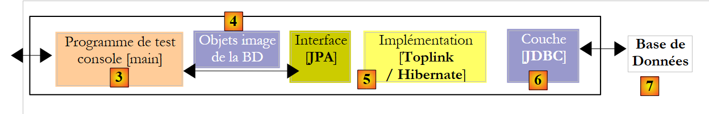
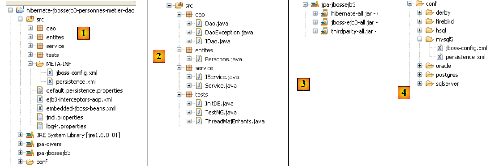
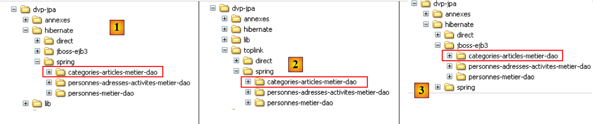
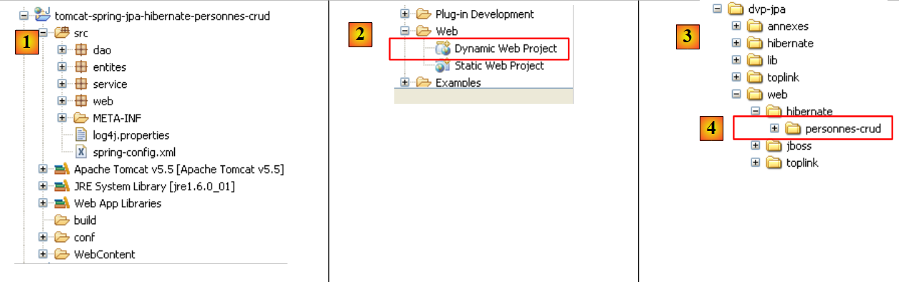
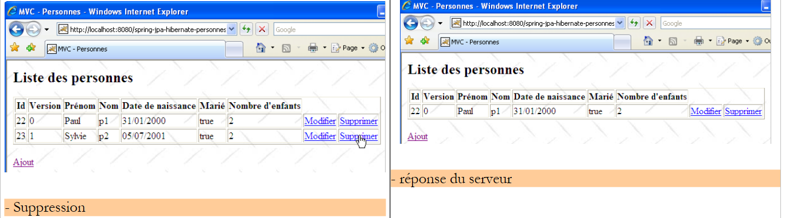
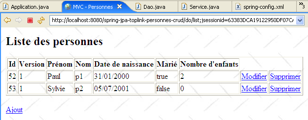

3. JPA in einer mehrschichtigen Architektur
Um die JPA-API zu untersuchen, haben wir die folgende Testarchitektur verwendet:
 |
Unsere Testprogramme waren Konsolenanwendungen, die die JPA-Schicht direkt abfragten. Auf diese Weise haben wir die wichtigsten Methoden der JPA-Schicht untersucht. Wir arbeiteten in einer sogenannten „Java SE“-Umgebung (Standard Edition). JPA funktioniert sowohl in Java SE- als auch in Java EE5-Umgebungen (Enterprise Edition).
Nachdem wir nun sowohl die Konfiguration der Relational/Object-Brücke als auch die Verwendung der Methoden der JPA-Schicht gut verstanden haben, kehren wir zu einer traditionelleren mehrschichtigen Architektur zurück:
 |
Der Zugriff auf die [JPA]-Schicht erfolgt über eine zweischichtige Architektur, die aus der [Business]- und der [DAO]-Schicht besteht. Zur Verknüpfung dieser Schichten wird das Spring-Framework [7] in Verbindung mit dem JBoss EJB3-Container [8] verwendet.
Wir haben bereits erwähnt, dass JPA sowohl in SE- als auch in EE5-Umgebungen verfügbar ist. Die Java EE5-Umgebung bietet zahlreiche Dienste für den Zugriff auf persistente Daten, darunter Verbindungspools, Transaktionsmanager und mehr. Für Entwickler kann es von Vorteil sein, diese Dienste zu nutzen. Die Java EE5-Umgebung ist noch nicht weit verbreitet (Stand: Mai 2007). Sie ist derzeit auf dem Sun Application Server 9.x (Glassfish) verfügbar. Ein Anwendungsserver ist im Wesentlichen ein Webanwendungsserver. Wenn Sie eine eigenständige grafische Anwendung mit Swing erstellen, können Sie die EE-Umgebung und die von ihr bereitgestellten Dienste nicht nutzen. Dies ist ein Problem. Es gibt mittlerweile „eigenständige“ EE-Umgebungen, d. h. solche, die außerhalb eines Anwendungsservers verwendet werden können. Dies ist bei JBoss EJB3 der Fall, das wir in diesem Dokument verwenden werden.
In einer EE5-Umgebung werden die Schichten durch Objekte implementiert, die als EJBs (Enterprise Java Beans) bezeichnet werden. In früheren Versionen von EE galten EJBs (EJB 2.x) als schwer zu implementieren und zu testen und zeigten manchmal eine unzureichende Leistung. Wir unterscheiden zwischen EJB 2.x-„Entity“- und EJB 2.x-„Session“-Beans. Kurz gesagt entspricht ein EJB 2.x-„Entity“ einer Zeile in einer Datenbanktabelle, und ein EJB 2.x-„Session“-Bean ist ein Objekt, das zur Implementierung der [Business]- und [DAO]-Schichten einer mehrschichtigen Architektur verwendet wird. Einer der Hauptkritikpunkte an Schichten, die mit EJBs in einer [ ] implementiert werden, ist, dass sie nur innerhalb von EJB-Containern verwendet werden können, einem Dienst, der von der EE-Umgebung bereitgestellt wird. Dies erschwert das Unit-Testing. Daher würde im obigen Diagramm das Unit-Testing der mit EJBs erstellten [Business]- und [DAO]-Schichten die Einrichtung eines Anwendungsservers erfordern – ein recht umständlicher Vorgang, der den Entwickler nicht gerade dazu ermutigt, häufig Tests durchzuführen.
Das Spring-Framework wurde als Antwort auf die Komplexität von EJB2 entwickelt. Spring stellt innerhalb einer SE-Umgebung eine beträchtliche Anzahl der Dienste bereit, die typischerweise von EE-Umgebungen bereitgestellt werden. So bietet Spring im Abschnitt „Datenpersistenz“, der uns hier interessiert, die Verbindungspools und Transaktionsmanager, die Anwendungen benötigen. Das Aufkommen von Spring hat eine Kultur der Unit-Tests gefördert, deren Durchführung plötzlich viel einfacher wurde. Spring ermöglicht die Implementierung von Anwendungsschichten unter Verwendung von Standard-Java-Objekten (POJOs, Plain Old/Ordinary Java Objects), wodurch deren Wiederverwendung in anderen Kontexten möglich wird. Schließlich integriert es zahlreiche Tools von Drittanbietern relativ transparent, insbesondere Persistenz-Tools wie Hibernate, iBatis, ...
Java EE 5 wurde entwickelt, um die Mängel der vorherigen EE-Spezifikation zu beheben. EJB 2.x hat sich zu EJB 3 weiterentwickelt. Dabei handelt es sich um POJOs, die mit Tags versehen sind, welche sie als spezielle Objekte kennzeichnen, wenn sie sich in einem EJB-3-Container befinden. Innerhalb des Containers kann das EJB 3 die Dienste des Containers (Verbindungspool, Transaktionsmanager usw.) nutzen. Außerhalb des EJB3-Containers wird das EJB3 zu einem Standard-Java-Objekt. Seine EJB-Annotationen werden ignoriert.
Oben haben wir Spring und JBoss EJB3 als mögliche Infrastruktur (Framework) für unsere mehrschichtige Architektur dargestellt. Diese Infrastruktur stellt die Dienste bereit, die wir benötigen: einen Verbindungspool und einen Transaktionsmanager.
- Bei Spring werden die Schichten mithilfe von POJOs implementiert. Diese greifen über die Abhängigkeitsinjektion in diese POJOs auf die Dienste von Spring (Verbindungspool, Transaktionsmanager) zu: Beim Erstellen injiziert Spring Referenzen auf die Dienste, die sie benötigen.
- JBoss EJB3 ist ein EJB-Container, der außerhalb eines Anwendungsservers ausgeführt werden kann. Seine Funktionsweise (aus Sicht des Entwicklers) entspricht der für Spring beschriebenen. Wir werden nur wenige Unterschiede feststellen.
Wir schließen dieses Dokument mit einem Beispiel für eine dreischichtige Webanwendung ab – einfach, aber repräsentativ:
 |
3.1. Beispiel 1: Spring / JPA mit der Entität „Person“
Wir nehmen die in Abschnitt 2.1 besprochene Person-Entität und integrieren sie in eine mehrschichtige Architektur, in der die Schichten mithilfe von Spring integriert sind und die Persistenzschicht durch Hibernate implementiert wird.
 |
Es wird vorausgesetzt, dass der Leser über grundlegende Kenntnisse von Spring verfügt. Sollte dies nicht der Fall sein, können Sie das folgende Dokument lesen, in dem das Konzept der Dependency Injection erläutert wird, das das Herzstück von Spring bildet:
[ref3]: Spring IoC (Inversion of Control) [http://tahe.developpez.com/java/springioc].
3.1.1. Das Eclipse/Spring/Hibernate-Projekt „ “
Das Eclipse-Projekt sieht wie folgt aus:
 |
 |
- in [1]: das Eclipse-Projekt. Es ist in [6] in den Beispielen des Tutorials [5] zu finden. Wir werden es importieren.
- in [2]: der Java-Code für die in Paketen dargestellten Schichten:
- [entities]: das JPA-Entitäten-Paket
- [dao]: die Datenzugriffsschicht – basierend auf der JPA-Schicht
- [service]: eine Service-Schicht statt einer Geschäftsschicht. Wir werden hier den Transaktionsdienst des Containers verwenden.
- [tests]: enthält die Testprogramme.
- in [3]: Die Bibliothek [jpa-spring] enthält die von Spring benötigten JARs (siehe auch [7] und [8]).
- in [4]: Der Ordner [conf] enthält die Spring-Konfigurationsdateien für jedes der in diesem Tutorial verwendeten DBMS.
3.1.2. n JPA-Entitäten
 |
Hier wird nur eine Entität verwaltet, nämlich die in Abschnitt 2.1 behandelte Person-Entität, deren Konfiguration unten dargestellt ist:
package entites;
...
@Entity
@Table(name="jpa01_hb_personne")
public class Personne {
@Id
@Column(name = "ID", nullable = false)
@GeneratedValue(strategy = GenerationType.AUTO)
private Integer id;
@Column(name = "VERSION", nullable = false)
@Version
private int version;
@Column(name = "NOM", length = 30, nullable = false, unique = true)
private String nom;
@Column(name = "PRENOM", length = 30, nullable = false)
private String prenom;
@Column(name = "DATENAISSANCE", nullable = false)
@Temporal(TemporalType.DATE)
private Date datenaissance;
@Column(name = "MARIE", nullable = false)
private boolean marie;
@Column(name = "NBENFANTS", nullable = false)
private int nbenfants;
// manufacturers
public Personne() {
}
public Personne(String nom, String prenom, Date datenaissance, boolean marie,
int nbenfants) {
...
}
// toString
public String toString() {
return String.format("[%d,%d,%s,%s,%s,%s,%d]", getId(), getVersion(),
getNom(), getPrenom(), new SimpleDateFormat("dd/MM/yyyy")
.format(getDatenaissance()), isMarie(), getNbenfants());
}
// getters and setters
...
}
3.1.3. Die [ -DAO]-Schicht
 |  |
Die [DAO]-Schicht stellt die folgende IDao-Schnittstelle bereit:
package dao;
import java.util.List;
import entites.Personne;
public interface IDao {
// find a person via his/her login
public Personne getOne(Integer id);
// get all the people
public List<Personne> getAll();
// save a person
public Personne saveOne(Personne personne);
// update a person
public Personne updateOne(Personne personne);
// delete a person via his/her login
public void deleteOne(Integer id);
// get people whose name corresponds to a model
public List<Personne> getAllLike(String modele);
}
Die [Dao]-Implementierung dieser Schnittstelle lautet wie folgt:
package dao;
import java.util.List;
import javax.persistence.EntityManager;
import javax.persistence.PersistenceContext;
import entites.Personne;
public class Dao implements IDao {
@PersistenceContext
private EntityManager em;
// supprimer une personne via son identifiant
public void deleteOne(Integer id) {
Personne personne = em.find(Personne.class, id);
if (personne == null) {
throw new DaoException(2);
}
em.remove(personne);
}
@SuppressWarnings("unchecked")
// obtenir toutes les personnes
public List<Personne> getAll() {
return em.createQuery("select p from Personne p").getResultList();
}
@SuppressWarnings("unchecked")
// obtenir les personnes dont le nom correspond àun modèle
public List<Personne> getAllLike(String modele) {
return em.createQuery("select p from Personne p where p.nom like :modele")
.setParameter("modele", modele).getResultList();
}
// obtenir une personne via son identifiant
public Personne getOne(Integer id) {
return em.find(Personne.class, id);
}
// sauvegarder une personne
public Personne saveOne(Personne personne) {
em.persist(personne);
return personne;
}
// mettre à jour une personne
public Personne updateOne(Personne personne) {
return em.merge(personne);
}
}
- Beachten Sie zunächst die Einfachheit der [Dao]-Implementierung. Dies ist auf die Verwendung der JPA-Schicht zurückzuführen, die den Großteil der Datenzugriffsaufgaben übernimmt.
- Zeile 10: Die [Dao]-Klasse implementiert die [IDao]-Schnittstelle
- Zeile 13: Das [EntityManager]-Objekt wird zur Manipulation des JPA-Persistenzkontexts verwendet. Der Einfachheit halber bezeichnen wir es manchmal als den Persistenzkontext selbst. Der Persistenzkontext enthält Person-Entitäten.
- Zeile 12: Das Feld [EntityManager em] wird an keiner Stelle im Code initialisiert. Es wird von Spring beim Start der Anwendung initialisiert. Es ist die JPA-Annotation @PersistenceContext in Zeile 12, die Spring anweist, einen Persistenzkontext-Manager in em zu injizieren.
- Zeilen 26–28: Die Liste aller Personen wird über eine JPQL-Abfrage abgerufen.
- Zeilen 32–35: Die Liste aller Personen, deren Namen einem bestimmten Muster entsprechen, wird über eine JPQL-Abfrage abgerufen.
- Zeilen 38–40: Die Person mit einer bestimmten ID wird mithilfe der `find`-Methode der JPA-API abgerufen. Gibt einen Null-Zeiger zurück, wenn die Person nicht existiert.
- Zeilen 43–46: Eine Person wird mithilfe der Methode `persist` der JPA-API persistent gemacht. Die Methode macht die Person persistent.
- Zeilen 49–51: Eine Person wird mithilfe der `merge`-Methode der JPA-API aktualisiert. Diese Methode ist nur sinnvoll, wenn die zu aktualisierende Person zuvor getrennt war. Die Methode macht die auf diese Weise erstellte Person persistent.
- Zeilen 16–22: Das Löschen der Person, deren ID als Parameter übergeben wird, erfolgt in zwei Schritten:
- Zeile 17: Sie wird im Persistenzkontext gesucht
- Zeilen 18–20: Wird sie nicht gefunden, wird eine Ausnahme mit dem Fehlercode 2 ausgelöst
- Zeile 21: Wird sie gefunden, wird sie mithilfe der `remove`-Methode der JPA-API aus dem Persistenzkontext entfernt.
- Was an dieser Stelle nicht ersichtlich ist: Jede Methode wird innerhalb einer Transaktion ausgeführt, die von der [Service]-Schicht gestartet wird.
Die Anwendung verfügt über einen eigenen Ausnahmetyp namens [DaoException]:
package dao;
@SuppressWarnings("serial")
public class DaoException extends RuntimeException {
// error code
private int code;
public DaoException(int code) {
super();
this.code = code;
}
public DaoException(String message, int code) {
super(message);
this.code = code;
}
public DaoException(Throwable cause, int code) {
super(cause);
this.code = code;
}
public DaoException(String message, Throwable cause, int code) {
super(message, cause);
this.code = code;
}
// getter and setter
public int getCode() {
return code;
}
public void setCode(int code) {
this.code = code;
}
}
- Zeile 4: [DaoException] erweitert [RuntimeException]. Es handelt sich daher um eine Ausnahmetyp, für den der Compiler nicht verlangt, dass wir ihn mit einem try/catch-Block behandeln oder in Methodensignaturen aufnehmen. Aus diesem Grund ist [DaoException] nicht in der Signatur der Methode [deleteOne] der Schnittstelle [IDao] enthalten. Dadurch kann die Schnittstelle von einer Klasse implementiert werden, die eine andere Art von Ausnahme auslöst, vorausgesetzt, diese leitet sich ebenfalls von [RuntimeException] ab.
- Um zwischen den möglichen Fehlern zu unterscheiden, verwenden wir den Fehlercode in Zeile 7. Die drei Konstruktoren in den Zeilen 14, 19 und 24 sind diejenigen der übergeordneten Klasse [RuntimeException], denen wir einen Parameter hinzugefügt haben: den Fehlercode, den wir der Ausnahme zuweisen möchten.
3.1.4. Die [business/ -Service]-Schicht
 |
Die [Service]-Ebene stellt die folgende [IService]-Schnittstelle bereit:
package service;
import java.util.List;
import entites.Personne;
public interface IService {
// find a person via his/her login
public Personne getOne(Integer id);
// get all the people
public List<Personne> getAll();
// save a person
public Personne saveOne(Personne personne);
// update a person
public Personne updateOne(Personne personne);
// delete a person via his/her login
public void deleteOne(Integer id);
// get people whose names match a model
public List<Personne> getAllLike(String modele);
// delete several people at once
public void deleteArray(Personne[] personnes);
// save several people at once
public Personne[] saveArray(Personne[] personnes);
// update several people at once
public Personne[] updateArray(Personne[] personnes);
}
- Zeilen 8–24: Die Schnittstelle [IService] erbt die Methoden von der Schnittstelle [IDao]
- Zeile 27: Mit der Methode [deleteArray] können Sie eine Gruppe von Personen innerhalb einer Transaktion löschen: Entweder werden alle Personen gelöscht oder keine.
- Zeilen 30 und 33: Methoden, die denen von [deleteArray] entsprechen, zum Speichern (Zeile 30) oder Aktualisieren (Zeile 33) einer Gruppe von Personen innerhalb einer Transaktion.
Die [Service]-Implementierung der [IService]-Schnittstelle lautet wie folgt:
package service;
...
// all class methods take place in a transaction
@Transactional
public class Service implements IService {
// layer [dao]
private IDao dao;
public IDao getDao() {
return dao;
}
public void setDao(IDao dao) {
this.dao = dao;
}
// delete several people at once
public void deleteArray(Personne[] personnes) {
for (Personne p : personnes) {
dao.deleteOne(p.getId());
}
}
// delete a person via his/her login
public void deleteOne(Integer id) {
dao.deleteOne(id);
}
// get all the people
public List<Personne> getAll() {
return dao.getAll();
}
// get people whose names match a model
public List<Personne> getAllLike(String modele) {
return dao.getAllLike(modele);
}
// find a person via his/her login
public Personne getOne(Integer id) {
return dao.getOne(id);
}
// save several people at once
public Personne[] saveArray(Personne[] personnes) {
Personne[] personnes2 = new Personne[personnes.length];
for (int i = 0; i < personnes.length; i++) {
personnes2[i] = dao.saveOne(personnes[i]);
}
return personnes2;
}
// save a person
public Personne saveOne(Personne personne) {
return dao.saveOne(personne);
}
// update several people at once
public Personne[] updateArray(Personne[] personnes) {
Personne[] personnes2 = new Personne[personnes.length];
for (int i = 0; i < personnes.length; i++) {
personnes2[i] = dao.updateOne(personnes[i]);
}
return personnes2;
}
// update a person
public Personne updateOne(Personne personne) {
return dao.updateOne(personne);
}
}
- Zeile 6: Die Spring-Annotation @Transactional gibt an, dass alle Methoden der Klasse innerhalb einer Transaktion ausgeführt werden müssen. Eine Transaktion wird vor Beginn der Methodenausführung gestartet und nach der Ausführung geschlossen. Tritt während der Methodenausführung eine Ausnahme vom Typ [RuntimeException] oder einer Unterklasse auf, wird die gesamte Transaktion durch ein automatisches Rollback rückgängig gemacht; andernfalls wird sie durch ein automatisches Commit bestätigt. Beachten Sie, dass sich der Java-Code nicht um Transaktionen kümmern muss. Diese werden von Spring verwaltet.
- Zeile 10: Ein Verweis auf die [dao]-Schicht. Wir werden später sehen, dass dieser Verweis von Spring beim Start der Anwendung initialisiert wird.
- Die Methoden von [Service] rufen einfach die Methoden der Schnittstelle [IDao dao] ab Zeile 10 auf. Wir überlassen es dem Leser, den Code zu überprüfen. Es gibt keine besonderen Schwierigkeiten.
- Wir haben bereits erwähnt, dass jede Methode von [Service] innerhalb einer Transaktion ausgeführt wird. Diese Transaktion ist an den Ausführungs-Thread der Methode angehängt. Innerhalb dieses Threads werden Methoden aus der [dao]-Schicht ausgeführt. Diese werden automatisch an die Transaktion des Ausführungs-Threads angehängt. Die Methode [deleteArray] (Zeile 21) muss beispielsweise die Methode [deleteOne] aus der [dao]-Schicht N-mal ausführen. Diese N Ausführungen finden innerhalb des Ausführungsthreads der Methode [deleteArray] und somit innerhalb derselben Transaktion statt. Daher werden sie entweder alle bestätigt, wenn alles gut läuft, oder alle zurückgesetzt, wenn bei einer der N Ausführungen der Methode [deleteOne] in der [dao]-Schicht eine Ausnahme auftritt.
3.1.5. Schichtkonfiguration
 |  |
Die Konfiguration der Schichten [service], [dao] und [JPA] wird durch die beiden oben genannten Dateien [META-INF/persistence.xml] und [spring-config.xml] vorgenommen. Beide Dateien müssen sich im Klassenpfad der Anwendung befinden, weshalb sie im Ordner [src] des Eclipse-Projekts abgelegt sind. Der Dateiname [spring-config.xml] ist beliebig.
persistence.xml
<?xml version="1.0" encoding="UTF-8"?>
<persistence version="1.0" xmlns="http://java.sun.com/xml/ns/persistence" xmlns:xsi="http://www.w3.org/2001/XMLSchema-instance"
xsi:schemaLocation="http://java.sun.com/xml/ns/persistence http://java.sun.com/xml/ns/persistence/persistence_1_0.xsd">
<persistence-unit name="jpa" transaction-type="RESOURCE_LOCAL" />
</persistence>
- Zeile 4: Die Datei deklariert eine Persistenz-Einheit namens jpa, die „lokale“ Transaktionen verwendet, d. h. Transaktionen, die nicht von einem EJB3-Container bereitgestellt werden. Diese Transaktionen werden von Spring erstellt und verwaltet und sind in der Datei [spring-config.xml] konfiguriert.
spring-config.xml
<?xml version="1.0" encoding="UTF-8"?>
<beans xmlns="http://www.springframework.org/schema/beans"
xmlns:xsi="http://www.w3.org/2001/XMLSchema-instance"
xmlns:tx="http://www.springframework.org/schema/tx"
xsi:schemaLocation="http://www.springframework.org/schema/beans http://www.springframework.org/schema/beans/spring-beans-2.0.xsd http://www.springframework.org/schema/tx http://www.springframework.org/schema/tx/spring-tx-2.0.xsd">
<!-- application layers -->
<bean id="dao" class="dao.Dao" />
<bean id="service" class="service.Service">
<property name="dao" ref="dao" />
</bean>
<!-- persistence layer JPA -->
<bean id="entityManagerFactory"
class="org.springframework.orm.jpa.LocalContainerEntityManagerFactoryBean">
<property name="dataSource" ref="dataSource" />
<property name="jpaVendorAdapter">
<bean
class="org.springframework.orm.jpa.vendor.HibernateJpaVendorAdapter">
<!--
<property name="showSql" value="true" />
-->
<property name="databasePlatform"
value="org.hibernate.dialect.MySQL5InnoDBDialect" />
<property name="generateDdl" value="true" />
</bean>
</property>
<property name="loadTimeWeaver">
<bean
class="org.springframework.instrument.classloading.InstrumentationLoadTimeWeaver" />
</property>
</bean>
<!-- data source DBCP -->
<bean id="dataSource"
class="org.apache.commons.dbcp.BasicDataSource"
destroy-method="close">
<property name="driverClassName" value="com.mysql.jdbc.Driver" />
<property name="url" value="jdbc:mysql://localhost:3306/jpa" />
<property name="username" value="jpa" />
<property name="password" value="jpa" />
</bean>
<!-- transaction manager -->
<tx:annotation-driven transaction-manager="txManager" />
<bean id="txManager"
class="org.springframework.orm.jpa.JpaTransactionManager">
<property name="entityManagerFactory"
ref="entityManagerFactory" />
</bean>
<!-- translation of exceptions -->
<bean
class="org.springframework.dao.annotation.PersistenceExceptionTranslationPostProcessor" />
<!-- persistence annotations -->
<bean
class="org.springframework.orm.jpa.support.PersistenceAnnotationBeanPostProcessor" />
</beans>
- Zeilen 2–5: Das oberste <beans>-Tag der Konfigurationsdatei. Wir werden nicht näher auf die verschiedenen Attribute dieses Tags eingehen. Achten Sie darauf, diese sorgfältig zu kopieren und einzufügen, da ein Fehler in einem dieser Attribute zu Fehlern führen kann, die manchmal schwer zu verstehen sind.
- Zeile 8: Die „dao“-Bean ist eine Referenz auf eine Instanz der Klasse [dao.Dao]. Es wird eine einzige Instanz erstellt (Singleton), die die [dao]-Schicht der Anwendung implementiert.
- Zeilen 9–11: Instanziierung der [service]-Schicht. Die „service“-Bean ist eine Referenz auf eine Instanz der Klasse [service.Service]. Es wird eine einzige Instanz erstellt (Singleton), die die [service]-Schicht der Anwendung implementiert. Wir haben gesehen, dass die Klasse [service.Service] ein privates Feld [IDao dao] hatte. Dieses Feld wird in Zeile 10 durch die in Zeile 8 definierte „dao“-Bean initialisiert.
- Letztendlich haben die Zeilen 8–11 die [dao]- und [service]-Schichten konfiguriert. Wir werden später sehen, wann und wie sie instanziiert werden.
- Zeilen 35–42: Es wird eine Datenquelle definiert. Wir sind dem Konzept einer Datenquelle bereits begegnet, als wir uns mit JPA-Entitäten in Hibernate befasst haben:
 |
Oben hätte [c3p0], das als „Verbindungspool“ bezeichnet wurde, auch als „Datenquelle“ bezeichnet werden können. Eine Datenquelle stellt den „Verbindungspool“-Dienst bereit. Mit Spring werden wir eine andere Datenquelle als [c3p0] verwenden. Es handelt sich um [DBCP] aus dem Apache Commons DBCP-Projekt [http://jakarta.apache.org/commons/dbcp/]. Die [DBCP]-Archive wurden in der [jpa-spring]-Benutzerbibliothek abgelegt:
 |
- Zeilen 38–41: Um Verbindungen zur Zieldatenbank herzustellen, muss die Datenquelle den verwendeten JDBC-Treiber (Zeile 38), die Datenbank-URL (Zeile 39) sowie den Benutzernamen und das Passwort für die Verbindung (Zeilen 40–41) kennen.
- Zeilen 14–32: Konfiguration der JPA-Schicht
- Zeilen 14–15: Definieren Sie eine [EntityManagerFactory]-Bean, die [EntityManager]-Objekte erstellen kann, um Persistenzkontexte zu verwalten. Die instanziierte Klasse [LocalContainerEntityManagerFactoryBean] wird von Spring bereitgestellt. Für die Instanziierung sind mehrere Parameter erforderlich, die in den Zeilen 16–31 definiert sind.
- Zeile 16: Die Datenquelle, die zum Herstellen von Verbindungen zum DBMS verwendet werden soll. Dies ist die in den Zeilen 35–42 definierte [DBCP]-Quelle.
- Zeilen 17–27: Die zu verwendende JPA-Implementierung
- Zeilen 18–26: Definieren Sie Hibernate (Zeile 19) als die zu verwendende JPA-Implementierung
- Zeilen 23–24: Der SQL-Dialekt, den Hibernate mit dem Ziel-DBMS verwenden muss, in diesem Fall MySQL5.
- Zeile 25: Fordert an, dass die Datenbank beim Start der Anwendung generiert wird (drop und create).
- Zeilen 28–31: Definieren eines „Class Loaders“. Ich kann die Rolle dieses von der EntityManagerFactory in der JPA-Schicht verwendeten Beans nicht eindeutig erklären. Es geht jedoch darum, an die JVM, auf der die Anwendung läuft, den Namen eines Archivs zu übergeben, dessen Inhalt das Laden der Klassen beim Start der Anwendung verwaltet. Hier ist dieses Archiv [spring-agent.jar], das sich in der Benutzerbibliothek [jpa-spring] befindet (siehe oben). Wir werden sehen, dass Hibernate diesen Agenten nicht benötigt, Toplink jedoch schon.
- Zeilen 45–50: Definieren den zu verwendenden Transaktionsmanager
- Zeile 45: gibt an, dass Transaktionen mithilfe von Java-Annotationen verwaltet werden (sie hätten auch in spring-config.xml deklariert werden können). Konkret bezieht sich dies auf die Annotation @Transactional in der [Service]-Klasse (Zeile 6).
- Zeilen 46–50: Der Transaktionsmanager
- Zeile 47: Der Transaktionsmanager ist eine von Spring bereitgestellte Klasse
- Zeilen 48–49: Der Transaktionsmanager von Spring muss die EntityManagerFactory kennen, die die JPA-Schicht verwaltet. Diese ist in den Zeilen 14–32 definiert.
- Zeilen 57–58: Definieren die Klasse, die die im Java-Code vorkommenden Spring-Persistenz-Annotationen verwaltet, wie beispielsweise die Annotation @PersistenceContext in der Klasse [dao.Dao] (Zeile 12).
- Zeilen 53–54: Definieren Sie die Spring-Klasse, die insbesondere die Annotation @Repository verwaltet, wodurch eine auf diese Weise annotierte Klasse für die Übersetzung nativer Ausnahmen aus dem JDBC-Treiber des DBMS in generische Spring-Ausnahmen vom Typ [DataAccessException] in Frage kommt. Diese Übersetzung kapseln die native JDBC-Ausnahme in einen Typ [DataAccessException] mit verschiedenen Unterklassen:

Diese Übersetzung ermöglicht es dem Client-Programm, Ausnahmen unabhängig vom Ziel-DBMS generisch zu behandeln. Wir haben die Annotation @Repository in unserem Java-Code nicht verwendet. Daher sind die Zeilen 53–54 überflüssig. Wir haben sie lediglich zu Informationszwecken stehen lassen.
Wir sind mit der Spring-Konfigurationsdatei fertig. Sie ist komplex, und viele Aspekte bleiben unklar. Sie stammt aus der Spring-Dokumentation. Glücklicherweise lässt sich ihre Anpassung an verschiedene Situationen oft auf zwei Änderungen reduzieren:
- die Zieldatenbank: Zeilen 38–41. Wir werden ein Oracle-Beispiel bereitstellen.
- die JPA-Implementierung: Zeilen 14–32. Wir werden ein TopLink-Beispiel bereitstellen.
3.1.6. Client-Programm [ InitDB]
Wir werden nun einen ersten Client für die oben beschriebene Architektur schreiben:
 |
Der Code für [InitDB] lautet wie folgt:
package tests;
...
public class InitDB {
// service layer
private static IService service;
// manufacturer
public static void main(String[] args) throws ParseException {
// application configuration
ApplicationContext ctx = new ClassPathXmlApplicationContext("spring-config.xml");
// service layer
service = (IService) ctx.getBean("service");
// empty the base
clean();
// fill it
fill();
// a visual check
dumpPersonnes();
}
// table content display
private static void dumpPersonnes() {
System.out.format("[personnes]%n");
for (Personne p : service.getAll()) {
System.out.println(p);
}
}
// table filling
public static void fill() throws ParseException {
// creating people
Personne p1 = new Personne("p1", "Paul", new SimpleDateFormat("dd/MM/yy").parse("31/01/2000"), true, 2);
Personne p2 = new Personne("p2", "Sylvie", new SimpleDateFormat("dd/MM/yy").parse("05/07/2001"), false, 0);
// we save
service.saveArray(new Personne[] { p1, p2 });
}
// deleting table items
public static void clean() {
for (Personne p : service.getAll()) {
service.deleteOne(p.getId());
}
}
}
- Zeile 12: Die Datei [spring-config.xml] wird verwendet, um ein [ApplicationContext ctx]-Objekt zu erstellen, das eine Speicherdarstellung der Datei darstellt. Die in [spring-config.xml] definierten Beans werden an dieser Stelle instanziiert.
- Zeile 14: Der Anwendungskontext ctx wird nach einer Referenz auf die [service]-Schicht gefragt. Wir wissen, dass diese durch eine Bean namens „service“ repräsentiert wird.
- Zeile 16: Die Datenbank wird mit der Methode „clean“ geleert. In den Zeilen 41–45:
- Zeilen 42–44: Wir fordern die Liste aller Benutzer aus dem Persistenzkontext an und durchlaufen diese in einer Schleife, um sie nacheinander zu löschen. Sie erinnern sich vielleicht, dass in [spring-config.xml] festgelegt ist, dass die Datenbank beim Start der Anwendung generiert werden muss. Daher ist in unserem Fall der Aufruf der `clean`-Methode unnötig, da wir mit einer leeren Datenbank beginnen.
- Zeile 18: Die Methode `fill` füllt die Datenbank. Dies ist in den Zeilen 32–38 definiert:
- Zeilen 34–35: Es werden zwei Personen angelegt
- Zeile 37: Die [Service]-Schicht wird aufgefordert, sie persistent zu machen.
- Zeile 20: Die Methode `dumpPersonnes` zeigt die persistenten Personen an. Sie ist in den Zeilen 24–29 definiert
- Zeilen 26–28: Wir fordern die Liste aller persistenten Personen von der [Service]-Schicht an und zeigen sie auf der Konsole an.
Die Ausführung von [InitDB] liefert das folgende Ergebnis:
3.1.7. Unit-Tests [ TestNG]
Die Installation des [TestNG]-Plugins wird in Abschnitt 5.2.4 beschrieben. Der Programmcode für [TestNG] lautet wie folgt:
package tests;
....
public class TestNG {
// service layer
private IService service;
@BeforeClass
public void init() {
// log
log("init");
// application configuration
ApplicationContext ctx = new ClassPathXmlApplicationContext("spring-config.xml");
// service layer
service = (IService) ctx.getBean("service");
}
@BeforeMethod
public void setUp() throws ParseException {
// empty the base
clean();
// fill it
fill();
}
// logs
private void log(String message) {
System.out.println("----------- " + message);
}
// table content display
private void dump() {
log("dump");
System.out.format("[personnes]%n");
for (Personne p : service.getAll()) {
System.out.println(p);
}
}
// table filling
public void fill() throws ParseException {
log("fill");
// creating people
Personne p1 = new Personne("p1", "Paul", new SimpleDateFormat("dd/MM/yy").parse("31/01/2000"), true, 2);
Personne p2 = new Personne("p2", "Sylvie", new SimpleDateFormat("dd/MM/yy").parse("05/07/2001"), false, 0);
// we save
service.saveArray(new Personne[] { p1, p2 });
}
// deleting table items
public void clean() {
log("clean");
for (Personne p : service.getAll()) {
service.deleteOne(p.getId());
}
}
@Test()
public void test01() {
...
}
...
}
- Zeile 9: Die Annotation @BeforeClass kennzeichnet die Methode, die zur Initialisierung der für die Tests erforderlichen Konfiguration ausgeführt werden soll. Sie wird vor dem Ausführen des ersten Tests ausgeführt. Die Annotation @AfterClass, die hier nicht verwendet wird, kennzeichnet die Methode, die ausgeführt werden soll, sobald alle Tests abgelaufen sind.
- Zeilen 10–17: Die mit @BeforeClass annotierte Methode init verwendet die Spring-Konfigurationsdatei, um die verschiedenen Schichten der Anwendung zu instanziieren und eine Referenz auf die [Service]-Schicht zu erhalten. Alle Tests verwenden dann diese Referenz.
- Zeile 19: Die Annotation @BeforeMethod kennzeichnet die Methode, die vor jedem Test ausgeführt werden soll. Die Annotation @AfterMethod, die hier nicht verwendet wird, kennzeichnet die Methode, die nach jedem Test ausgeführt werden soll.
- Zeilen 20–25: Die mit @BeforeMethod annotierte setUp-Methode löscht die Datenbank (Zeilen 52–56) und füllt sie anschließend mit zwei Personen (Zeilen 42–49).
- Zeile 59: Die Annotation @Test kennzeichnet eine auszuführende Testmethode. Wir werden diese Tests nun beschreiben.
@Test()
public void test01() {
log("test1");
dump();
// list of persons
List<Personne> personnes = service.getAll();
assert 2 == personnes.size();
}
@Test()
public void test02() {
log("test2");
// search for people by name
List<Personne> personnes = service.getAllLike("p1%");
assert 1 == personnes.size();
Personne p1 = personnes.get(0);
assert "Paul".equals(p1.getPrenom());
}
@Test()
public void test03() throws ParseException {
log("test3");
// create a new person
Personne p3 = new Personne("p3", "x", new SimpleDateFormat("dd/MM/yy").parse("05/07/2001"), false, 0);
// we keep it
service.saveOne(p3);
// we ask for it again
Personne loadedp3 = service.getOne(p3.getId());
// we display it
System.out.println(loadedp3);
// check
assert "p3".equals(loadedp3.getNom());
}
- Zeilen 2–8: Test 01. Beachte, dass die Datenbank zu Beginn jedes Tests zwei Personen namens p1 und p2 enthält.
- Zeile 6: Wir fordern die Liste der Personen an
- Zeile 7: Wir überprüfen, ob die Anzahl der Personen in der zurückgegebenen Liste 2 beträgt
- Zeile 14: Wir fordern die Liste der Personen an, deren Nachname mit p1 beginnt
- Wir überprüfen, ob die resultierende Liste nur ein Element enthält (Zeile 15) und ob der Vorname der einzigen gefundenen Person „Paul“ lautet (Zeile 17)
- Zeile 24: Erstellen einer Person namens p3
- Zeile 25: Speichern
- Zeile 28: Wir rufen sie zur Überprüfung aus dem Persistenzkontext ab
- Zeile 32: Wir überprüfen, ob die abgerufene Person tatsächlich den Namen p3 hat.
@Test()
public void test04() throws ParseException {
log("test4");
// we load person p1
List<Personne> personnes = service.getAllLike("p1%");
Personne p1 = personnes.get(0);
// we display it
System.out.println(p1);
// we check
assert "p1".equals(p1.getNom());
int version1 = p1.getVersion();
// change the first name
p1.setPrenom("x");
// we save
service.updateOne(p1);
// recharge
p1 = service.getOne(p1.getId());
// we display it
System.out.println(p1);
// check that the version has been incremented
assert (version1 + 1) == p1.getVersion();
}
- Zeile 5: Wir fragen nach der Person p1
- Zeile 10: Überprüfen wir ihren Namen
- Zeile 11: Wir notieren ihre Versionsnummer
- Zeile 13: Wir ändern den Vornamen
- Zeile 15: Speichern der Änderung
- Zeile 17: Person p1 erneut anfordern
- Zeile 21: Überprüfen, ob die Versionsnummer um 1 erhöht wurde
@Test()
public void test05() {
log("test5");
// we load person p2
List<Personne> personnes = service.getAllLike("p2%");
Personne p2 = personnes.get(0);
// we display it
System.out.println(p2);
// we check
assert "p2".equals(p2.getNom());
// delete person p2
service.deleteOne(p2.getId());
// recharge it
p2 = service.getOne(p2.getId());
// check that a null pointer has been obtained
assert null == p2;
// table is displayed
dump();
}
- Zeile 5: Wir fragen nach der Person p2
- Zeile 10: Überprüfen wir ihren Namen
- Zeile 12: Löschen
- Zeile 14: Wir fragen erneut nach ihr
- Zeile 16: Wir überprüfen, ob wir sie nicht gefunden haben
@Test()
public void test06() throws ParseException {
log("test6");
// on crée un tableau de 2 personnes de même nom (enfreint la règle d'unicité du nom)
Personne[] personnes = { new Personne("p3", "x", new SimpleDateFormat("dd/MM/yy").parse("31/01/2000"), true, 2),
new Personne("p4", "x", new SimpleDateFormat("dd/MM/yy").parse("31/01/2000"), true, 2),
new Personne("p4", "x", new SimpleDateFormat("dd/MM/yy").parse("31/01/2000"), true, 2)};
// on sauvegarde ce tableau - on doit obtenir une exception et un rollback
boolean erreur = false;
try {
service.saveArray(personnes);
} catch (RuntimeException e) {
erreur = true;
}
// dump
dump();
// vérifications
assert erreur;
// recherche personne de nom p3
List<Personne> personnesp3 = service.getAllLike("p3%");
assert 0 == personnesp3.size();
// dump
dump();
}
- Zeile 5: Wir erstellen ein Array mit drei Personen, von denen zwei denselben Namen „p4“ haben. Dies verstößt gegen die Eindeutigkeitsregel für den Namen der @Entity Person:
@Column(name = "NOM", length = 30, nullable = false, unique = true)
private String nom;
- Zeile 11: Das Array mit drei Personen wird in den Persistenzkontext gestellt. Das Hinzufügen der zweiten Person, p4, sollte fehlschlagen. Da die Methode [saveArray] innerhalb einer Transaktion ausgeführt wird, werden alle zuvor vorgenommenen Einfügungen zurückgesetzt. Letztendlich werden keine Ergänzungen vorgenommen.
- Zeile 18: Wir überprüfen, ob [saveArray] tatsächlich eine Ausnahme ausgelöst hat
- Zeilen 20–21: Wir überprüfen, ob die Person p3, die hätte hinzugefügt werden können, nicht hinzugefügt wurde.
@Test()
public void test07() {
log("test7");
// test optimistic locking
// we load person p1
List<Personne> personnes = service.getAllLike("p1%");
Personne p1 = personnes.get(0);
// we display it
System.out.println(p1);
// increase the number of children
int nbEnfants1 = p1.getNbenfants();
p1.setNbenfants(nbEnfants1 + 1);
// save p1
Personne newp1 = service.updateOne(p1);
assert (nbEnfants1 + 1) == newp1.getNbenfants();
System.out.println(newp1);
// we save a second time - we should have an exception because p1 no longer has the correct version
// newp1 has it
boolean erreur = false;
try {
service.updateOne(p1);
} catch (RuntimeException e) {
erreur = true;
}
// check
assert erreur;
// we increase the number of newp1 children
int nbEnfants2 = newp1.getNbenfants();
newp1.setNbenfants(nbEnfants2 + 1);
// save newp1
service.updateOne(newp1);
// recharge
p1 = service.getOne(p1.getId());
// we check
assert (nbEnfants1 + 2) == p1.getNbenfants();
System.out.println(p1);
}
- Zeile 6: Frage nach der Person p1
- Zeile 12: Wir erhöhen die Anzahl der Kinder um 1
- Zeile 14: Wir aktualisieren die Person p1 im Persistenzkontext. Die Methode [updateOne] macht die neue Version newp1 aus p1 persistent. Sie unterscheidet sich von p1 durch ihre Versionsnummer, die erhöht worden sein muss.
- Zeile 15: Wir prüfen die Anzahl der untergeordneten Elemente für newp1.
- Zeile 21: Wir fordern eine Aktualisierung der Person p1 basierend auf der alten Version p1 an. Es sollte eine Ausnahme auftreten, da p1 nicht die neueste Version der Person p1 ist. Die neueste Version ist newp1.
- Zeile 23: Wir überprüfen, ob der Fehler tatsächlich aufgetreten ist
- Zeilen 27–35: Wir überprüfen, ob bei einer Aktualisierung ausgehend von der neuesten Version newp1 alles korrekt funktioniert.
@Test()
public void test08() {
log("test8");
// test rollback on updateArray
// we load person p1
List<Personne> personnes = service.getAllLike("p1%");
Personne p1 = personnes.get(0);
// we display it
System.out.println(p1);
// increase the number of children
int nbEnfants1 = p1.getNbenfants();
p1.setNbenfants(nbEnfants1 + 1);
// save 2 modifications, the 2nd of which must fail (person incorrectly initialized)
// because of the transaction, both must be cancelled
boolean erreur = false;
try {
service.updateArray(new Personne[] { p1, new Personne() });
} catch (RuntimeException e) {
erreur = true;
}
// checks
assert erreur;
// we recharge person p1
personnes = service.getAllLike("p1%");
p1 = personnes.get(0);
// her number of children must not have changed
assert nbEnfants1 == p1.getNbenfants();
}
- Test 8 ähnelt Test 6: Er überprüft den Rollback bei einer `updateArray`-Operation, die auf einem Array mit zwei Personen durchgeführt wird, wobei die zweite Person nicht korrekt initialisiert wurde. Aus JPA-Sicht erzeugt die `merge`-Operation für die zweite Person – die noch nicht existiert – eine `insert`-SQL-Anweisung, die aufgrund der `nullable=false`-Einschränkungen für einige Felder der `Person`-Entität fehlschlägt.
@Test()
public void test09() {
log("test9");
// test rollback on deleteArray
// dump
dump();
// we load person p1
List<Personne> personnes = service.getAllLike("p1%");
Personne p1 = personnes.get(0);
// we display it
System.out.println(p1);
// we make 2 deletions, the 2nd of which must fail (unknown person)
// because of the transaction, both must be cancelled
boolean erreur = false;
try {
service.deleteArray(new Personne[] { p1, new Personne() });
} catch (RuntimeException e) {
erreur = true;
}
// checks
assert erreur;
// we recharge person p1
personnes = service.getAllLike("p1%");
// check
assert 1 == personnes.size();
// dump
dump();
}
- Test 9 ähnelt dem vorherigen: Er überprüft den Rollback bei einer `deleteArray`-Operation an einem Array mit zwei Personen, wobei die zweite Person nicht existiert. In diesem Fall löst jedoch die Methode `[deleteOne]` in der `[dao]`-Schicht eine Ausnahme aus.
// optimistic locking - multi-threaded access
@Test()
public void test10() throws Exception {
// add a person
Personne p3 = new Personne("X", "X", new SimpleDateFormat("dd/MM/yyyy").parse("01/02/2006"), true, 0);
service.saveOne(p3);
int id3 = p3.getId();
// creation of N threads for updating the number of children
final int N = 20;
Thread[] taches = new Thread[N];
for (int i = 0; i < taches.length; i++) {
taches[i] = new ThreadMajEnfants("thread n° " + i, service, id3);
taches[i].start();
}
// we wait for the end of threads
for (int i = 0; i < taches.length; i++) {
taches[i].join();
}
// we pick up the person
p3 = service.getOne(id3);
// she must have N children
assert N == p3.getNbenfants();
// delete person p3
service.deleteOne(p3.getId());
// check
p3 = service.getOne(p3.getId());
// we must have a null pointer
assert p3 == null;
}
- Die Idee hinter Test 10 ist es, N Threads zu starten (Zeile 9), um die Anzahl der Kinder einer Person parallel zu erhöhen. Wir wollen überprüfen, ob das Versionsnummernsystem dieses Szenario bewältigen kann. Es wurde zu diesem Zweck entwickelt.
- Zeilen 5–6: Eine Person namens p3 wird erstellt und gespeichert. Sie hat anfangs 0 Kinder.
- Zeile 7: Wir speichern ihre Kennung.
- Zeilen 9–14: Wir starten N Threads parallel, von denen jeder die Aufgabe hat, die Anzahl der Kinder von p3 um 1 zu erhöhen.
- Zeilen 16–18: Wir warten, bis alle Threads beendet sind
- Zeile 20: Wir fragen nach der Person p3
- Zeile 22: Wir überprüfen, ob p3 nun N Kinder hat
- Zeile 24: Die Person p3 wird gelöscht.
Der Thread [ThreadMajEnfants] sieht wie folgt aus:
package tests;
...
public class ThreadMajEnfants extends Thread {
// thread name
private String name;
// reference on the [service] layer
private IService service;
// the id of the person we're going to work on
private int idPersonne;
// manufacturer
public ThreadMajEnfants(String name, IService service, int idPersonne) {
this.name = name;
this.service = service;
this.idPersonne = idPersonne;
}
// thread core
public void run() {
// follow-up
suivi("lancé");
// we loop until we have succeeded in incrementing by 1
// person's number of children idPersonne
boolean fini = false;
int nbEnfants = 0;
while (!fini) {
// a copy of the idPersonne person is retrieved
Personne personne = service.getOne(idPersonne);
nbEnfants = personne.getNbenfants();
// follow-up
suivi("" + nbEnfants + " -> " + (nbEnfants + 1) + " pour la version " + personne.getVersion());
// increments the number of children by 1
personne.setNbenfants(nbEnfants + 1);
// 10 ms wait to abandon processor
try {
// follow-up
suivi("début attente");
// we pause to let the processor
Thread.sleep(10);
// follow-up
suivi("fin attente");
} catch (Exception ex) {
throw new RuntimeException(ex.toString());
}
// waiting complete - try to validate the copy
// in the meantime, other threads may have modified the original
try {
// we try to modify the original
service.updateOne(personne);
// we passed - the original has been modified
fini = true;
} catch (javax.persistence.OptimisticLockException e) {
// incorrect object version: exception ignored to start again
} catch (org.springframework.transaction.UnexpectedRollbackException e2) {
// with the occasional Spring exception
} catch (RuntimeException e3) {
// another type of exception - it is reassembled
throw e3;
}
}
// follow-up
suivi("a terminé et passé le nombre d'enfants à " + (nbEnfants + 1));
}
// follow-up
private void suivi(String message) {
System.out.println(name + " [" + new Date().getTime() + "] : " + message);
}
}
- Zeilen 15–19: Der Konstruktor speichert die Informationen, die er benötigt, um zu funktionieren: seinen Namen (Zeile 16), die Referenz auf die [service]-Schicht, die er verwenden muss (Zeile 17), und die Kennung der Person p, deren Anzahl an Kindern er erhöhen muss (Zeile 18).
- Zeilen 22–66: Die [run]-Methode wird von allen Threads parallel ausgeführt.
- Zeile 29: Der Thread versucht wiederholt, die Anzahl der Kinder der Person p zu erhöhen. Er hört erst auf, wenn er erfolgreich ist.
- Zeile 31: Die Person p wird abgefragt
- Zeile 36: Die Anzahl ihrer Kinder wird im Speicher erhöht
- Zeilen 38–47: Es wird eine Pause von 10 ms eingelegt. Dadurch können andere Threads dieselbe Version der Person p abrufen. Somit halten mehrere Threads gleichzeitig dieselbe Version der Person p und möchten diese ändern. Dies ist das gewünschte Verhalten.
- Zeile 52: Sobald die Pause vorbei ist, fordert der Thread die [Service]-Schicht auf, die Änderung zu speichern. Da wir wissen, dass von Zeit zu Zeit Ausnahmen auftreten, haben wir den Vorgang in einen try/catch-Block eingeschlossen.
- Zeile 55: Tests zeigen, dass Ausnahmen vom Typ [javax.persistence.OptimisticLockException] auftreten. Dies ist normal: Es handelt sich um die Ausnahme, die von der JPA-Schicht ausgelöst wird, wenn ein Thread versucht, die Person p zu ändern, ohne über deren aktuellste Version zu verfügen. Diese Ausnahme wird ignoriert, damit der Thread den Vorgang so lange wiederholen kann, bis er erfolgreich ist.
- Zeile 57: Tests zeigen, dass wir auch Ausnahmen vom Typ [org.springframework.transaction.UnexpectedRollbackException] erhalten. Das ist ärgerlich und unerwartet. Ich habe keine Erklärung dafür. Wir sind nun von Spring abhängig, obwohl wir das eigentlich vermeiden wollten. Das bedeutet, dass beispielsweise bei Ausführung unserer Anwendung in JBoss EJB3 der Code des Threads geändert werden muss. Die Spring-Ausnahme wird auch hier ignoriert, damit der Thread den Inkrementierungsvorgang wiederholen kann.
- Zeile 59: Andere Ausnahmetypen werden an die Anwendung weitergeleitet.
Wenn [TestNG] ausgeführt wird, erhalten wir die folgenden Ergebnisse:

Alle 10 Tests wurden erfolgreich bestanden.
Test 10 bedarf einer näheren Erläuterung, da die Tatsache, dass er bestanden wurde, etwas Magisches an sich hat. Schauen wir uns zunächst noch einmal die Konfiguration der [dao]-Schicht an:
public class Dao implements IDao {
@PersistenceContext
private EntityManager em;
- Zeile 4: Ein [EntityManager]-Objekt wird mithilfe der JPA-Annotation @PersistenceContext in das Feld em injiziert. Die [dao]-Schicht wird nur einmal instanziiert. Es handelt sich um ein Singleton, das von allen Threads genutzt wird, die die JPA-Schicht verwenden. Somit wird der EntityManager em von allen Threads gemeinsam genutzt. Dies lässt sich überprüfen, indem man den Wert von em in der von den [ThreadMajEnfants]-Threads verwendeten Methode [updateOne] anzeigt: Der Wert ist für alle Threads identisch.
Folglich könnte man sich fragen, ob die persistenten Objekte der verschiedenen Threads, die vom EntityManager em verwaltet werden – der für alle Threads derselbe ist –, nicht durcheinander geraten und Konflikte untereinander verursachen könnten. Ein Beispiel dafür, was passieren könnte, findet sich in ThreadMajEnfants:
while (!fini) {
// on récupère une copie de la personne d'idPersonne
Personne personne = service.getOne(idPersonne);
nbEnfants = personne.getNbenfants();
// suivi
suivi("" + nbEnfants + " -> " + (nbEnfants + 1) + " pour la version " + personne.getVersion());
// incrémente de 1 le nbre d'enfants de la personne
personne.setNbenfants(nbEnfants + 1);
// attente de 10 ms pour abandonner le processeur
try {
// suivi
suivi("début attente");
// on s'interrompt pour laisser le processeur
Thread.sleep(10);
// suivi
suivi("fin attente");
} catch (Exception ex) {
throw new RuntimeException(ex.toString());
}
- Zeile 3: Ein Thread T1 ruft die Person p ab
- Zeile 8: Er erhöht die Anzahl der Kinder von p
- Zeile 14: Thread T1 pausiert
Ein Thread T2 übernimmt und führt ebenfalls Zeile 3 aus: Er fragt dieselbe Person p ab wie T1. Wäre der Persistenzkontext der Threads identisch, müsste die Person p – die dank T1 bereits im Kontext vorhanden ist – an T2 zurückgegeben werden. Tatsächlich verwendet die Methode [getOne] die Methode [EntityManager].find der JPA-API, und diese Methode greift nur dann auf die Datenbank zu, wenn das angeforderte Objekt nicht Teil des Persistenzkontexts ist; andernfalls gibt sie das Objekt aus dem Persistenzkontext zurück. Wäre dies der Fall, würden T1 und T2 dieselbe Person p enthalten. T2 würde dann die Anzahl der Kinder von p erneut um 1 erhöhen (Zeile 8). Wenn einer der Threads die Daten nach der Pause erfolgreich aktualisiert, wäre die Anzahl der Kinder von p um 2 und nicht wie erwartet um 1 erhöht worden. Man könnte nun erwarten, dass die N Threads die Anzahl der Kinder nicht auf N, sondern auf einen höheren Wert setzen. Dies ist jedoch nicht der Fall. Wir können daher schlussfolgern, dass T1 und T2 nicht dieselbe Referenz p haben. Wir überprüfen dies, indem wir die Threads die Adresse von p anzeigen lassen: Sie ist für jeden von ihnen unterschiedlich.
Es scheint also, dass die Threads:
- sich denselben Persistenzkontext-Manager (EntityManager) teilen
- aber jeweils über einen eigenen Persistenzkontext verfügen.
Dies sind jedoch nur Vermutungen, und die Meinung eines Experten wäre hier hilfreich.
3.1.8. Wechsel des DBMS
 |
Um das DBMS zu ändern, ersetzen Sie einfach die Datei [src/spring-config.xml] [2] durch die Datei [spring-config.xml] für das entsprechende DBMS aus dem Ordner [conf] [1].
Die Datei [spring-config.xml] für Oracle sieht beispielsweise wie folgt aus:
<?xml version="1.0" encoding="UTF-8"?>
<beans xmlns="http://www.springframework.org/schema/beans" xmlns:xsi="http://www.w3.org/2001/XMLSchema-instance"
xmlns:tx="http://www.springframework.org/schema/tx"
xsi:schemaLocation="http://www.springframework.org/schema/beans http://www.springframework.org/schema/beans/spring-beans-2.0.xsd http://www.springframework.org/schema/tx http://www.springframework.org/schema/tx/spring-tx-2.0.xsd">
...
<bean id="entityManagerFactory" class="org.springframework.orm.jpa.LocalContainerEntityManagerFactoryBean">
<property name="dataSource" ref="dataSource" />
<property name="jpaVendorAdapter">
<bean class="org.springframework.orm.jpa.vendor.HibernateJpaVendorAdapter">
<!--
<property name="showSql" value="true" />
-->
<property name="databasePlatform" value="org.hibernate.dialect.OracleDialect" />
<property name="generateDdl" value="true" />
</bean>
</property>
<property name="loadTimeWeaver">
<bean class="org.springframework.instrument.classloading.InstrumentationLoadTimeWeaver" />
</property>
</bean>
<!-- data source DBCP -->
<bean id="dataSource" class="org.apache.commons.dbcp.BasicDataSource" destroy-method="close">
<property name="driverClassName" value="oracle.jdbc.OracleDriver" />
<property name="url" value="jdbc:oracle:thin:@localhost:1521:xe" />
<property name="username" value="jpa" />
<property name="password" value="jpa" />
</bean>
...
</beans>
Im Vergleich zu derselben Datei, die zuvor für MySQL5 verwendet wurde, haben sich nur wenige Zeilen geändert:
- Zeile 14: der SQL-Dialekt, den Hibernate verwenden muss
- Zeilen 25–28: die Eigenschaften der JDBC-Verbindung zum DBMS
Leser werden dazu ermutigt, die für MySQL 5 beschriebenen Tests mit anderen DBMS zu wiederholen.
3.1.9. Änderung der JPA-Implementierung
Kehren wir zur Architektur der vorherigen Tests zurück:
 |
Wir ersetzen die JPA/Hibernate-Implementierung durch eine JPA/TopLink-Implementierung. Da TopLink nicht dieselben Bibliotheken wie Hibernate verwendet, nutzen wir ein neues Eclipse-Projekt:
 |
- in [1]: das Eclipse-Projekt. Es ist identisch mit dem vorherigen. Die einzigen Änderungen betreffen die Konfigurationsdatei [spring-config.xml] [2] und die Bibliothek [jpa-toplink], die die Bibliothek [jpa-hibernate] ersetzt.
- in [3]: der Ordner „examples“ für dieses Tutorial. In [4] das zu importierende Eclipse-Projekt.
Die Konfigurationsdatei [spring-config.xml] für Toplink sieht nun wie folgt aus:
<?xml version="1.0" encoding="UTF-8"?>
<!-- the JVM must be launched with the -javaagent:C:\data\2006-2007\eclipse\dvp-jpa\lib\spring\spring-agent.jar argument
(à remplacer par le chemin exact de spring-agent.jar)-->
<beans xmlns="http://www.springframework.org/schema/beans" xmlns:xsi="http://www.w3.org/2001/XMLSchema-instance"
xmlns:tx="http://www.springframework.org/schema/tx"
xsi:schemaLocation="http://www.springframework.org/schema/beans http://www.springframework.org/schema/beans/spring-beans-2.0.xsd http://www.springframework.org/schema/tx http://www.springframework.org/schema/tx/spring-tx-2.0.xsd">
<!-- application layers -->
<bean id="dao" class="dao.Dao" />
<bean id="service" class="service.Service">
<property name="dao" ref="dao" />
</bean>
<bean id="entityManagerFactory" class="org.springframework.orm.jpa.LocalContainerEntityManagerFactoryBean">
<property name="dataSource" ref="dataSource" />
<property name="jpaVendorAdapter">
<bean class="org.springframework.orm.jpa.vendor.TopLinkJpaVendorAdapter">
<!--
<property name="showSql" value="true" />
-->
<property name="databasePlatform" value="oracle.toplink.essentials.platform.database.MySQL4Platform" />
<property name="generateDdl" value="true" />
</bean>
</property>
<property name="loadTimeWeaver">
<bean class="org.springframework.instrument.classloading.InstrumentationLoadTimeWeaver" />
</property>
</bean>
<!-- data source DBCP -->
<bean id="dataSource" class="org.apache.commons.dbcp.BasicDataSource" destroy-method="close">
<property name="driverClassName" value="com.mysql.jdbc.Driver" />
<property name="url" value="jdbc:mysql://localhost:3306/jpa" />
<property name="username" value="jpa" />
<property name="password" value="jpa" />
</bean>
<!-- transaction manager -->
<tx:annotation-driven transaction-manager="txManager" />
<bean id="txManager" class="org.springframework.orm.jpa.JpaTransactionManager">
<property name="entityManagerFactory" ref="entityManagerFactory" />
</bean>
<!-- translation of exceptions -->
<bean class="org.springframework.dao.annotation.PersistenceExceptionTranslationPostProcessor" />
<!-- persistence -->
<bean class="org.springframework.orm.jpa.support.PersistenceAnnotationBeanPostProcessor" />
</beans>
Es müssen nur wenige Zeilen geändert werden, um von Hibernate zu Toplink zu wechseln:
- Zeile 19: Die JPA-Implementierung wird nun von Toplink übernommen
- Zeile 23: Die Eigenschaft [databasePlatform] hat einen anderen Wert als bei Hibernate: den Namen einer Toplink-spezifischen Klasse. Wo dieser Name zu finden ist, wurde in Abschnitt 2.1.15.2 erläutert.
Das war’s schon. Beachten Sie, wie einfach es ist, mit Spring das DBMS oder die JPA-Implementierung zu wechseln.
Wir sind jedoch noch nicht ganz fertig. Wenn Sie beispielsweise [InitDB] ausführen, erhalten Sie eine Ausnahme, die nicht leicht zu verstehen ist:
Exception in thread "main" org.springframework.beans.factory.BeanCreationException: Error creating bean with name 'entityManagerFactory' defined in class path resource [spring-config.xml]: Invocation of init method failed; nested exception is java.lang.IllegalStateException: Must start with Java agent to use InstrumentationLoadTimeWeaver. See Spring documentation.
Caused by: java.lang.IllegalStateException: Must start with Java agent to use
Die Fehlermeldung in Zeile 1 fordert Sie auf, die Spring-Dokumentation zu konsultieren. Dort erfahren Sie etwas mehr über die Rolle, die eine obskure Deklaration in der Datei [spring-config.xml] spielt:
<bean id="entityManagerFactory" class="org.springframework.orm.jpa.LocalContainerEntityManagerFactoryBean">
<property name="dataSource" ref="dataSource" />
<property name="jpaVendorAdapter">
<bean class="org.springframework.orm.jpa.vendor.HibernateJpaVendorAdapter">
<!--
<property name="showSql" value="true" />
-->
<property name="databasePlatform" value="org.hibernate.dialect.OracleDialect" />
<property name="generateDdl" value="true" />
</bean>
</property>
<property name="loadTimeWeaver">
<bean class="org.springframework.instrument.classloading.InstrumentationLoadTimeWeaver" />
</property>
</bean>
Zeile 1 der Ausnahme bezieht sich auf eine Klasse namens [InstrumentationLoadTimeWeaver], die in Zeile 13 der Spring-Konfigurationsdatei zu finden ist. In der Spring-Dokumentation wird erläutert, dass diese Klasse in bestimmten Fällen zum Laden der Anwendungsklassen erforderlich ist und dass die JVM mit einem Agenten gestartet werden muss, damit sie funktioniert. Dieser Agent wird von Spring bereitgestellt und heißt [spring-agent]:
 |
- Die Datei [spring-agent.jar] befindet sich im Ordner <examples>/lib [1]. Sie ist in der Spring 2.x-Distribution enthalten (siehe Abschnitt 5.11).
- Erstellen Sie in [3] eine Ausführungskonfiguration [Ausführen/Ausführen...]
- Erstellen Sie in [4] eine Java-Laufkonfiguration (es gibt verschiedene Arten von Laufkonfigurationen)
 |
- Wählen Sie in [5] die Registerkarte [Main] aus
- Geben Sie in [6] einen Namen für die Konfiguration ein
- Geben Sie in [7] einen Namen für das mit dieser Konfiguration verknüpfte Eclipse-Projekt ein (verwenden Sie die Schaltfläche „Durchsuchen“)
- Geben Sie in [8] den Namen der Java-Klasse ein, die die [main]-Methode enthält (verwenden Sie die Schaltfläche „Durchsuchen“)
- Gehen Sie in [9] zur Registerkarte [Arguments]. Dort können Sie zwei Arten von Argumenten angeben:
- in [9] diejenigen, die an die [main]-Methode übergeben werden
- in [10] diejenigen, die an die JVM übergeben werden, die den Code ausführt. Der Spring-Agent wird über den JVM-Parameter -javaagent:value definiert. Der Wert ist der Pfad zur Datei [spring-agent.jar].
- In [11]: Speichern Sie die Konfiguration
- in [12]: Die Konfiguration wird erstellt
- in [13]: Wir führen sie aus
Sobald dies erledigt ist, wird [InitDB] ausgeführt und liefert die gleichen Ergebnisse wie mit Hibernate. Für [TestNG] verfahren Sie auf die gleiche Weise:
 |
- Erstellen Sie in [1] eine Ausführungskonfiguration [Ausführen/Ausführen...]
- in [2] eine TestNG-Laufkonfiguration erstellen
- in [3] wählen Sie die Registerkarte [Test]
- in [4] benennen Sie die Konfiguration
- in [5] benennen Sie das mit dieser Konfiguration verknüpfte Eclipse-Projekt (verwenden Sie die Schaltfläche „Durchsuchen“)
- In [6] benennen Sie die Testklasse (verwenden Sie die Schaltfläche „Durchsuchen“)
 |
- Gehen Sie in [7] zur Registerkarte [Argumente].
- In [8]: Legen Sie das Argument -javaagent für die JVM fest.
- In [9]: Speichern Sie die Konfiguration
- In [10]: Die Konfiguration wurde erstellt
- In [11]: Führen Sie sie aus
Sobald dies erledigt ist, wird [TestNG] ausgeführt und liefert die gleichen Ergebnisse wie mit Hibernate.
3.2. Beispiel 2: JBoss EJB3/JPA- ierung mit der Entität „Person“
Wir verwenden dasselbe Beispiel wie zuvor, führen es jedoch in einem EJB3-Container aus, genauer gesagt in dem von JBoss:
 |
Ein EJB3-Container ist normalerweise in einen Anwendungsserver integriert. JBoss bietet einen „Standalone“-EJB3-Container an, der außerhalb eines Anwendungsservers verwendet werden kann. Wir werden feststellen, dass er ähnliche Dienste bereitstellt wie Spring. Wir werden versuchen herauszufinden, welcher dieser Container sich als der praktischste erweist.
Die Installation des JBoss-EJB3-Containers wird in Abschnitt 5.12 beschrieben.
3.2.1. Das Eclipse-/JBoss-EJB3-/Hibernate-Projekt
Das Eclipse-Projekt sieht wie folgt aus:
 |
 |
- in [1]: das Eclipse-Projekt. Es ist in [6] in den Beispielen des Tutorials [5] zu finden. Wir werden es importieren.
- in [2]: der Java-Code für die in Paketen dargestellten Schichten:
- [entities]: das JPA-Entitäten-Paket
- [dao]: die Datenzugriffsschicht – basierend auf der JPA-Schicht
- [service]: eine Service-Schicht statt einer Geschäftsschicht. Wir werden den Transaktionsdienst des EJB3-Containers verwenden.
- [tests]: enthält die Testprogramme.
- in [3]: Die Bibliothek [jpa-jbossejb3] enthält die für JBoss EJB3 erforderlichen JARs (siehe auch [7] und [8]).
- in [4]: Der Ordner [conf] enthält die Konfigurationsdateien für jedes der in diesem Tutorial verwendeten DBMS. Für jedes gibt es zwei Dateien: [persistence.xml], die die JPA-Schicht konfiguriert, und [jboss-config.xml], die den EJB3-Container konfiguriert.
3.2.2. JPA-Entitäten
 |
Hier wird nur eine Entität verwaltet: die Entität „Person“, die bereits in Abschnitt 3.1.2 behandelt wurde.
3.2.3. Die [dao]-Schicht
 |
Die [DAO]-Schicht implementiert die [IDao]-Schnittstelle, die zuvor in Abschnitt 3.1.3 beschrieben wurde.
Die [Dao]-Implementierung dieser Schnittstelle lautet wie folgt:
package dao;
...
@Stateless
public class Dao implements IDao {
@PersistenceContext
private EntityManager em;
// delete a person via his/her login
@TransactionAttribute(TransactionAttributeType.REQUIRED)
public void deleteOne(Integer id) {
Personne personne = em.find(Personne.class, id);
if (personne == null) {
throw new DaoException(2);
}
em.remove(personne);
}
// get all the people
@TransactionAttribute(TransactionAttributeType.REQUIRED)
public List<Personne> getAll() {
return em.createQuery("select p from Personne p").getResultList();
}
// get people whose names match a model
@TransactionAttribute(TransactionAttributeType.REQUIRED)
public List<Personne> getAllLike(String modele) {
return em.createQuery("select p from Personne p where p.nom like :modele")
.setParameter("modele", modele).getResultList();
}
// find a person via his/her login
@TransactionAttribute(TransactionAttributeType.REQUIRED)
public Personne getOne(Integer id) {
return em.find(Personne.class, id);
}
// save a person
@TransactionAttribute(TransactionAttributeType.REQUIRED)
public Personne saveOne(Personne personne) {
em.persist(personne);
return personne;
}
// update a person
@TransactionAttribute(TransactionAttributeType.REQUIRED)
public Personne updateOne(Personne personne) {
return em.merge(personne);
}
}
- Dieser Code ist in jeder Hinsicht identisch mit dem, den wir bei Spring hatten. Nur die Java-Annotationen haben sich geändert, und genau darum geht es hier.
- Zeile 4: Die Annotation @Stateless macht die Klasse [Dao] zu einem zustandslosen EJB. Die Annotation @Stateful macht eine Klasse zu einem zustandsbehafteten EJB. Ein zustandsbehaftetes EJB verfügt über private Felder, deren Werte über einen bestimmten Zeitraum hinweg erhalten bleiben müssen. Ein klassisches Beispiel ist eine Klasse, die Informationen zu einem Benutzer einer Webanwendung enthält. Eine Instanz dieser Klasse ist einem bestimmten Benutzer zugeordnet, und wenn der Ausführungsthread für die Anfrage dieses Benutzers abgeschlossen ist, muss die Instanz beibehalten werden, damit sie für die nächste Anfrage desselben Clients verfügbar ist. Ein @Stateless-EJB hat keinen Zustand. Um das gleiche Beispiel zu verwenden: Am Ende des Ausführungs-Threads der Anfrage eines Benutzers wird das @Stateless-EJB in einen Pool von @Stateless-EJBs aufgenommen und steht für den Ausführungs-Thread der Anfrage eines anderen Benutzers zur Verfügung.
- Für den Entwickler ähnelt das Konzept eines @Stateless EJB3 dem eines Spring-Singletons. Es wird in denselben Szenarien verwendet.
- Zeile 7: Die Annotation @PersistenceContext entspricht derjenigen, die in der Spring-Version der [DAO]-Schicht vorkommt. Sie bezeichnet das Feld, das den EntityManager enthält, wodurch die [DAO]-Schicht den Persistenzkontext manipulieren kann.
- Zeile 11: Die auf eine Methode angewendete Annotation @TransactionAttribute dient dazu, die Transaktion zu konfigurieren, in der die Methode ausgeführt wird. Hier sind einige mögliche Werte für diese Annotation:
- TransactionAttributeType.REQUIRED: Die Methode muss innerhalb einer Transaktion ausgeführt werden. Wenn bereits eine Transaktion gestartet wurde, finden die Persistenzoperationen der Methode innerhalb dieser Transaktion statt. Andernfalls wird eine Transaktion erstellt und gestartet.
- TransactionAttributeType.REQUIRES_NEW: Die Methode muss innerhalb einer neuen Transaktion ausgeführt werden. Diese Transaktion wird erstellt und gestartet.
- TransactionAttributeType.MANDATORY: Die Methode muss innerhalb einer bestehenden Transaktion ausgeführt werden. Wenn keine solche Transaktion existiert, wird eine Ausnahme ausgelöst.
- TransactionAttributeType.NEVER: Die Methode wird niemals innerhalb einer Transaktion ausgeführt.
- ...
Die Annotation hätte auch an der Klasse selbst angebracht werden können:
@Stateless
@TransactionAttribute(TransactionAttributeType.REQUIRED)
public class Dao implements IDao {
Das Attribut wird dann auf alle Methoden der Klasse angewendet.
3.2.4. Die [Business-/Service-]Schicht
 |
Die [Service]-Schicht implementiert die zuvor in Abschnitt 3.1.4 beschriebene [IService]-Schnittstelle. Die [Service]-Implementierung der [IService]-Schnittstelle ist identisch mit der zuvor in Abschnitt 3.1.4 beschriebenen Implementierung, mit drei Ausnahmen:
@Stateless
@TransactionAttribute(TransactionAttributeType.REQUIRED)
public class Service implements IService {
// layer [dao]
@EJB
private IDao dao;
public IDao getDao() {
return dao;
}
public void setDao(IDao dao) {
this.dao = dao;
}
- Zeile 2: Die Klasse [Service] ist ein zustandsloser EJB
- Zeile 3: Alle Methoden der Klasse [Service] müssen innerhalb einer Transaktion ausgeführt werden
- Zeilen 7–8: Eine Referenz auf das EJB in der [dao]-Schicht wird vom EJB-Container in das Feld [IDao dao] in Zeile 8 injiziert. Die Annotation @EJB in Zeile 7 fordert diese Injektion an. Das injizierte Objekt muss ein EJB sein. Dies ist ein wesentlicher Unterschied zu Spring, wo jeder Objekttyp in ein anderes Objekt injiziert werden kann.
3.2.5. Konfiguration der Schichten
 |
Die Konfiguration der [Service]-, [DAO]- und [JPA]-Schichten erfolgt über die folgenden Dateien:
- [META-INF/persistence.xml] konfiguriert die JPA-Schicht
- [jboss-config.xml] konfiguriert den EJB3-Container. Sie verwendet die Dateien [default.persistence.properties, ejb3-interceptors-aop.xml, embedded-jboss-beans.xml, jndi.properties]. Diese Dateien sind im Lieferumfang von JBoss EJB3 enthalten und bieten eine Standardkonfiguration, die normalerweise unverändert bleibt. Der Entwickler muss sich nur mit der Datei [jboss-config.xml] befassen
Sehen wir uns die beiden Konfigurationsdateien einmal an:
persistence.xml
<persistence xmlns="http://java.sun.com/xml/ns/persistence" xmlns:xsi="http://www.w3.org/2001/XMLSchema-instance"
xsi:schemaLocation="http://java.sun.com/xml/ns/persistence
http://java.sun.com/xml/ns/persistence/persistence_1_0.xsd" version="1.0">
<persistence-unit name="jpa">
<!-- the JPA provider is Hibernate -->
<provider>org.hibernate.ejb.HibernatePersistence</provider>
<!-- the DataSource JTA managed by the Java EE5 environment -->
<jta-data-source>java:/datasource</jta-data-source>
<properties>
<!-- search for JBA layer entities -->
<property name="hibernate.archive.autodetection" value="class, hbm" />
<!-- logs SQL Hibernate
<property name="hibernate.show_sql" value="true"/>
<property name="hibernate.format_sql" value="true"/>
<property name="use_sql_comments" value="true"/>
-->
<!-- the type of SGBD managed -->
<property name="hibernate.dialect" value="org.hibernate.dialect.MySQLInnoDBDialect" />
<!-- recreate all tables (drop+create) when the persistence unit is deployed -->
<property name="hibernate.hbm2ddl.auto" value="create" />
</properties>
</persistence-unit>
</persistence>
Diese Datei ähnelt denen, die wir bereits bei unserer Betrachtung von JPA-Entitäten kennengelernt haben. Sie konfiguriert eine Hibernate-JPA-Schicht. Die neuen Funktionen sind wie folgt:
- Zeile 5: Die JPA-Persistenz-Einheit verfügt nicht über das Attribut „transaction-type“, das wir bisher immer hatten:
<persistence-unit name="jpa" transaction-type="RESOURCE_LOCAL" />
Wenn kein Wert angegeben wird, ist der Standardwert für das Attribut „transaction-type“ „JTA“ (für Java Transaction API), was bedeutet, dass der Transaktionsmanager von einem EJB 3-Container bereitgestellt wird. Ein „JTA“-Manager kann mehr als ein „RESOURCE_LOCAL“-Manager: Er kann Transaktionen verwalten, die sich über mehrere Verbindungen erstrecken. Mit JTA können Sie die Transaktion t1 auf der Verbindung c1 in DB 1 und die Transaktion t2 auf der Verbindung c2 in DB 2 öffnen und (t1,t2) als eine einzige Transaktion behandeln, bei der entweder alle Operationen erfolgreich sind (Commit) oder keine (Rollback).
Hier verwenden wir den JTA-Manager des JBoss EJB3-Containers.
- Zeile 11: Deklariert die Datenquelle, die der JTA-Manager verwenden muss. Diese wird als JNDI-Name (Java Naming and Directory Interface) angegeben. Diese Datenquelle ist in [jboss-config.xml] definiert.
jboss-config.xml
<?xml version="1.0" encoding="UTF-8"?>
<deployment xmlns:xsi="http://www.w3.org/2001/XMLSchema-instance" xsi:schemaLocation="urn:jboss:bean-deployer bean-deployer_1_0.xsd"
xmlns="urn:jboss:bean-deployer:2.0">
<!-- factory of the DataSource -->
<bean name="datasourceFactory" class="org.jboss.resource.adapter.jdbc.local.LocalTxDataSource">
<!-- name JNDI of DataSource -->
<property name="jndiName">java:/datasource</property>
<!-- managed database -->
<property name="driverClass">com.mysql.jdbc.Driver</property>
<property name="connectionURL">jdbc:mysql://localhost:3306/jpa</property>
<property name="userName">jpa</property>
<property name="password">jpa</property>
<!-- properties connection pool -->
<property name="minSize">0</property>
<property name="maxSize">10</property>
<property name="blockingTimeout">1000</property>
<property name="idleTimeout">100000</property>
<!-- transaction manager, here JTA -->
<property name="transactionManager">
<inject bean="TransactionManager" />
</property>
<!-- hibernate cache manager -->
<property name="cachedConnectionManager">
<inject bean="CachedConnectionManager" />
</property>
<!-- properties instantiation JNDI ? -->
<property name="initialContextProperties">
<inject bean="InitialContextProperties" />
</property>
</bean>
<!-- the DataSource is requested from a factory -->
<bean name="datasource" class="java.lang.Object">
<constructor factoryMethod="getDatasource">
<factory bean="datasourceFactory" />
</constructor>
</bean>
</deployment>
- Zeile 3: Das Stamm-Tag der Datei lautet <deployment>. Diese Deployment-Datei dient in erster Linie dazu, die in persistence.xml deklarierte Datenquelle java:/datasource zu konfigurieren.
- Die Datenquelle wird durch die „datasource“-Bean in Zeile 38 definiert. Wir sehen, dass die Datenquelle (Zeile 40) von einer „Factory“ abgerufen wird, die durch die „datasourceFactory“-Bean in Zeile 7 definiert ist. Um die Datenquelle der Anwendung abzurufen, muss der Client die Methode [getDatasource] der Factory aufrufen (Zeile 39).
- Zeile 7: Die Factory, die die Datenquelle bereitstellt, ist eine JBoss-Klasse.
- Zeile 9: Der JNDI-Name der Datenquelle. Dieser muss mit dem Namen übereinstimmen, der im <jta-data-source>-Tag in der Datei persistence.xml deklariert ist. Tatsächlich verwendet die JPA-Schicht diesen JNDI-Namen, um die Datenquelle anzufordern.
- Zeilen 12–15: etwas Standardmäßigeres: die JDBC-Eigenschaften für die Verbindung zum DBMS
- Zeilen 18–21: Konfiguration des internen Verbindungspools des JBoss-EJB3-Containers.
- Zeilen 24–26: Der JTA-Manager. Die in Zeile 25 injizierte Klasse [TransactionManager] ist in der Datei [embedded-jboss-beans.xml] definiert.
- Zeilen 28–30: Der Hibernate-Cache, ein Konzept, das wir bisher noch nicht behandelt haben. Die in Zeile 29 injizierte Klasse [CachedConnectionManager] ist in der Datei [embedded-jboss-beans.xml] definiert. Beachten Sie, dass die Konfiguration nun von Hibernate abhängig ist, was zu Problemen führen wird, wenn wir auf TopLink migrieren wollen.
- Zeilen 32–34: JNDI-Dienstkonfiguration.
Wir sind mit der JBoss-EJB3-Konfigurationsdatei fertig. Sie ist komplex, und viele Aspekte bleiben unklar. Sie wurde aus [ref1] übernommen. Wir werden sie jedoch an ein anderes DBMS anpassen können (Zeilen 12–15 von jboss-config.xml, Zeile 24 von persistence.xml). Eine Migration zu TopLink war aufgrund fehlender Beispiele nicht möglich.
3.2.6. Client-Programm [InitDB]
Wir beginnen nun mit der Erstellung des ersten Clients für die oben beschriebene Architektur:
 |
Der Code für [InitDB] lautet wie folgt:
package tests;
...
public class InitDB {
// service layer
private static IService service;
// manufacturer
public static void main(String[] args) throws ParseException, NamingException {
// start the EJB3 JBoss container
// configuration files ejb3-interceptors-aop.xml and embedded-jboss-beans.xml are used
EJB3StandaloneBootstrap.boot(null);
// Creating application-specific beans
EJB3StandaloneBootstrap.deployXmlResource("META-INF/jboss-config.xml");
// Deploy all EJBs found on classpath (slow, scans all)
// EJB3StandaloneBootstrap.scanClasspath();
// deploy all EJB found in the application classpath
EJB3StandaloneBootstrap.scanClasspath("bin".replace("/", File.separator));
// The JNDI context is initialized. The jndi.properties file is used
InitialContext initialContext = new InitialContext();
// service layer instantiation
service = (IService) initialContext.lookup("Service/local");
// empty the base
clean();
// fill it
fill();
// a visual check
dumpPersonnes();
// we stop the Ejb container
EJB3StandaloneBootstrap.shutdown();
}
// table content display
private static void dumpPersonnes() {
System.out.format("[personnes]-------------------------------------------------------------------%n");
for (Personne p : service.getAll()) {
System.out.println(p);
}
}
// table filling
public static void fill() throws ParseException {
// creating people
Personne p1 = new Personne("p1", "Paul", new SimpleDateFormat("dd/MM/yy").parse("31/01/2000"), true, 2);
Personne p2 = new Personne("p2", "Sylvie", new SimpleDateFormat("dd/MM/yy").parse("05/07/2001"), false, 0);
// we save
service.saveArray(new Personne[] { p1, p2 });
}
// deleting table items
public static void clean() {
for (Personne p : service.getAll()) {
service.deleteOne(p.getId());
}
}
}
- Die Methode zum Starten des JBoss EJB3-Containers wurde in [ref1] gefunden.
- Zeile 13: Der Container wird gestartet. [EJB3StandaloneBootstrap] ist eine Klasse des Containers.
- Zeile 16: Die durch [jboss-config.xml] konfigurierte Deployment-Einheit wird im Container bereitgestellt: Der JTA-Manager, die Datenquelle, der Verbindungspool, der Hibernate-Cache und der JNDI-Dienst werden eingerichtet.
- Zeile 22: Der Container wird angewiesen, den bin-Ordner des Eclipse-Projekts zu durchsuchen, um die EJBs zu finden. Die EJBs aus den Schichten [service] und [dao] werden vom Container gefunden und verwaltet.
- Zeile 25: Ein JNDI-Kontext wird initialisiert. Wir werden ihn verwenden, um die EJBs zu finden.
- Zeile 28: Die EJB, die der [Service]-Klasse in der [service]-Schicht entspricht, wird vom JNDI-Dienst angefordert. Auf eine EJB kann lokal oder über das Netzwerk zugegriffen werden. Hier bezieht sich der Name „Service/local“ der gesuchten EJB auf die [Service]-Klasse in der [service]-Schicht für den lokalen Zugriff.
- Nun ist die Anwendung bereitgestellt, und wir haben eine Referenz auf die [service]-Schicht. Wir befinden uns in derselben Situation wie nach Zeile 11 unten im [InitDB]-Code der Spring-Version. Daher finden wir in beiden Versionen denselben Code.
public class InitDB {
// service layer
private static IService service;
// manufacturer
public static void main(String[] args) throws ParseException {
// application configuration
ApplicationContext ctx = new ClassPathXmlApplicationContext("spring-config.xml");
// service layer
service = (IService) ctx.getBean("service");
// empty the base
clean();
// fill it
fill();
// a visual check
dumpPersonnes();
}
...
- Zeile 36 (JBoss EJB3): Stoppen Sie den EJB3-Container.
Die Ausführung von [InitDB] liefert folgende Ergebnisse:
Leser werden gebeten, diese Protokolle durchzusehen. Sie enthalten interessante Informationen darüber, was der EJB3-Container tut.
3.2.7. Unit-Tests [TestNG]
Der Programmcode für [TestNG] lautet wie folgt:
package tests;
...
public class TestNG {
// service layer
private IService service = null;
@BeforeClass
public void init() throws NamingException, ParseException {
// log
log("init");
// start the EJB3 JBoss container
// configuration files ejb3-interceptors-aop.xml and embedded-jboss-beans.xml are used
EJB3StandaloneBootstrap.boot(null);
// Creating application-specific beans
EJB3StandaloneBootstrap.deployXmlResource("META-INF/jboss-config.xml");
// Deploy all EJBs found on classpath (slow, scans all)
// EJB3StandaloneBootstrap.scanClasspath();
// deploy all EJB found in the application classpath
EJB3StandaloneBootstrap.scanClasspath("bin".replace("/", File.separator));
// The JNDI context is initialized. The jndi.properties file is used
InitialContext initialContext = new InitialContext();
// service layer instantiation
service = (IService) initialContext.lookup("Service/local");
// empty the base
clean();
// fill it
fill();
// a visual check
dumpPersonnes();
}
@AfterClass
public void terminate() {
// log
log("terminate");
// Shutdown EJB container
EJB3StandaloneBootstrap.shutdown();
}
@BeforeMethod
public void setUp() throws ParseException {
...
}
...
}
- Die init-Methode (Zeilen 10–37), die die für die Tests erforderliche Umgebung einrichtet, verwendet den zuvor in [InitDB] erläuterten Code.
- Die Methode „terminate“ (Zeilen 40–45), die am Ende der Tests ausgeführt wird (aufgrund der Annotation @AfterClass), stoppt den EJB3-Container (Zeile 44).
- Alles andere ist identisch mit der Spring-Version.
Die Tests werden bestanden:

3.2.8. Änderung des DBMS
 |
Um das DBMS zu ändern, ersetzen Sie einfach den Inhalt des Ordners [META-INF] [2] durch den Inhalt des Ordners DBMS im Ordner [conf] [1]. Nehmen wir SQL Server als Beispiel:
Die Datei [persistence.xml] sieht wie folgt aus:
<persistence xmlns="http://java.sun.com/xml/ns/persistence" xmlns:xsi="http://www.w3.org/2001/XMLSchema-instance"
xsi:schemaLocation="http://java.sun.com/xml/ns/persistence
http://java.sun.com/xml/ns/persistence/persistence_1_0.xsd" version="1.0">
<persistence-unit name="jpa">
<!-- the JPA provider is Hibernate -->
<provider>org.hibernate.ejb.HibernatePersistence</provider>
<!-- the DataSource JTA managed by the Java EE5 environment -->
<jta-data-source>java:/datasource</jta-data-source>
<properties>
<!-- search for JBA layer entities -->
<property name="hibernate.archive.autodetection" value="class, hbm" />
<!-- logs SQL Hibernate
<property name="hibernate.show_sql" value="true"/>
<property name="hibernate.format_sql" value="true"/>
<property name="use_sql_comments" value="true"/>
-->
<!-- the type of SGBD managed -->
<property name="hibernate.dialect" value="org.hibernate.dialect.SQLServerDialect" />
<!-- recreate all tables (drop+create) when the persistence unit is deployed -->
<property name="hibernate.hbm2ddl.auto" value="create" />
</properties>
</persistence-unit>
</persistence>
Es hat sich nur eine Zeile geändert:
- Zeile 24: der SQL-Dialekt, den Hibernate verwenden muss
Die SQL Server-Datei [jboss-config.xml] sieht wie folgt aus:
<?xml version="1.0" encoding="UTF-8"?>
<deployment xmlns:xsi="http://www.w3.org/2001/XMLSchema-instance" xsi:schemaLocation="urn:jboss:bean-deployer bean-deployer_1_0.xsd"
xmlns="urn:jboss:bean-deployer:2.0">
<!-- factory of the DataSource -->
<bean name="datasourceFactory" class="org.jboss.resource.adapter.jdbc.local.LocalTxDataSource">
<!-- name JNDI of DataSource -->
<property name="jndiName">java:/datasource</property>
<!-- managed database -->
<property name="driverClass">com.microsoft.sqlserver.jdbc.SQLServerDriver</property>
<property name="connectionURL">jdbc:sqlserver://localhost\\SQLEXPRESS:1246;databaseName=jpa</property>
<property name="userName">jpa</property>
<property name="password">jpa</property>
<!-- properties connection pool -->
...
</bean>
</deployment>
Nur die Zeilen 12–15 wurden geändert: Sie legen die Eigenschaften der neuen JDBC-Verbindung fest.
Leser werden dazu ermutigt, die für MySQL5 beschriebenen Tests mit anderen DBMS zu wiederholen.
3.2.9. Änderung der JPA-Implementierung
Wie oben erwähnt, haben wir keine Beispiele für die Verwendung des JBoss-EJB3-Containers mit TopLink gefunden. Zum Zeitpunkt der Erstellung dieses Artikels (Juni 2007) weiß ich noch nicht, ob diese Konfiguration möglich ist.
3.3. Weitere Beispiele
Fassen wir zusammen, was wir mit der Entität „Person“ gemacht haben. Wir haben drei Architekturen entwickelt, um dieselben Tests auszuführen:
1 – eine Spring/Hibernate-Implementierung
 |
2 – eine Spring/TopLink-Implementierung
 |
3 – eine JBoss EJB3-/Hibernate-Implementierung
 |
Die Beispiele im Tutorial verwenden diese drei Architekturen zusammen mit anderen Entitäten, die im ersten Teil des Tutorials behandelt werden:
Kategorie – Artikel
 |
- in [1]: die Spring/Hibernate-Version
- in [2]: die Spring-/Toplink-Version
- in [3]: die JBoss EJB3/Hibernate-Version
Person – Adresse – Aktivität
 |
- in [1]: die Spring/Hibernate-Version
- in [2]: die Spring/Toplink-Version
- in [3]: die JBoss EJB3/Hibernate-Version
Diese Beispiele führen keine neuen Architekturkonzepte ein. Sie beziehen sich lediglich auf ein Szenario, in dem mehrere Entitäten zu verwalten sind, zwischen denen Eins-zu-Viele- oder Viele-zu-Viele-Beziehungen bestehen – etwas, das in den Beispielen mit der Entität „Person“ nicht vorkam.
3.4. Beispiel 3: Spring / JPA in einer Webanwendung
3.4.1. Übersicht
Hier greifen wir eine Anwendung wieder auf, die im folgenden Dokument vorgestellt wurde:
[ref4]: Die Grundlagen der MVC-Webentwicklung in Java [http://tahe.developpez.com/java/baseswebmvc/].
Dieses Dokument stellt die Grundlagen der MVC-Webentwicklung in Java vor. Um das folgende Beispiel zu verstehen, sollte der Leser mit diesen Grundlagen vertraut sein. Die Webanwendung wird den Tomcat-Server verwenden. Dessen Installation und Verwendung in Eclipse werden in Abschnitt 5.3 beschrieben.
Die Anwendung wurde ursprünglich mit einer [DAO]-Schicht entwickelt, die auf dem iBatis/SQLMap-Tool [http://ibatis.apache.org/] basierte, welches das Mapping von relationalen Daten zu Objekten übernahm. Wir werden iBatis einfach durch JPA ersetzen. Die Anwendungsarchitektur sieht wie folgt aus:
 |
Die Webanwendung, die wir erstellen werden, ermöglicht es uns, eine Gruppe von Personen mithilfe von vier Operationen zu verwalten:
- Liste der Personen in der Gruppe
- eine Person zur Gruppe hinzufügen
- eine Person in der Gruppe bearbeiten
- Person aus der Gruppe entfernen
Diese vier grundlegenden Operationen sind in einer Datenbanktabelle üblich. Die folgenden Bildschirm en zeigen die Seiten, die die Anwendung dem Benutzer anzeigt.
 |
 |
 |
 |
 |
3.4.2. Das Eclipse-Projekt
Das Eclipse-Projekt für die Anwendung sieht wie folgt aus:
 |
- in [1]: das Webprojekt. Es handelt sich um ein Eclipse-Projekt vom Typ [Dynamic Web Project] [2]. Es befindet sich in [4] im Ordner [3] der Tutorial-Beispiele. Wir werden es importieren.
 |
- in [5]: die Quellen und die Konfiguration der [Service-, DAO-, JPA-]Schichten. Wir behalten die vorhandenen [DAO-, Entity-, Service-]Komponenten aus dem in Abschnitt 3.1.1 besprochenen Eclipse-Projekt [hibernate-spring-people-business-dao] bei. Wir entwickeln nur die [Web-]Schicht, die hier durch das [Web]-Paket repräsentiert wird. Darüber hinaus behalten wir die Konfigurationsdateien [persistence.xml, spring-config.xml] aus diesem Projekt bei, mit der Ausnahme, dass wir das Postgres-DBMS verwenden, was zu folgenden Änderungen in [spring-config.xml] führt:
<?xml version="1.0" encoding="UTF-8"?>
<beans xmlns="http://www.springframework.org/schema/beans"
...
<bean id="entityManagerFactory" class="org.springframework.orm.jpa.LocalContainerEntityManagerFactoryBean">
<property name="dataSource" ref="dataSource" />
<property name="jpaVendorAdapter">
...
<property name="databasePlatform" value="org.hibernate.dialect.PostgreSQLDialect" />
...
</property>
...
</bean>
<!-- data source DBCP -->
<bean id="dataSource" class="org.apache.commons.dbcp.BasicDataSource" destroy-method="close">
<property name="driverClassName" value="org.postgresql.Driver" />
<property name="url" value="jdbc:postgresql:jpa" />
<property name="username" value="jpa" />
<property name="password" value="jpa" />
</bean>
....
</beans>
Die Zeilen 8 und 16–19 wurden für Postgres angepasst.
- In [6]: Der Ordner [WebContent] enthält die JSP-Seiten des Projekts sowie die erforderlichen Bibliotheken. Diese sind in [8] aufgeführt
- Die Anwendung kann mit verschiedenen DBMS verwendet werden. Ändern Sie dazu einfach die Datei [spring-config.xml]. Der Ordner [conf] [7] enthält die für verschiedene DBMS angepasste Datei [spring-config.xml].
3.4.3. Die [Web]-Schicht
Unsere Anwendung verfügt über die folgende mehrschichtige Architektur:
 |
Die [Web]-Schicht stellt dem Benutzer Bildschirme zur Verfügung, über die er die Personengruppe verwalten kann:
- Liste der Personen in der Gruppe
- eine Person zur Gruppe hinzufügen
- eine Person in der Gruppe bearbeiten
- Person aus der Gruppe entfernen
Dazu stützt es sich auf die [Service]-Schicht, die wiederum die [DAO]-Schicht aufruft. Die von der [Web]-Schicht verwalteten Bildschirme haben wir bereits vorgestellt (Abschnitt 3.4.1). Um die Web-Schicht zu beschreiben, werden wir nacheinander Folgendes vorstellen:
- ihre Konfiguration
- ihre Ansichten
- ihren Controller
- einige Tests
3.4.3.1. Konfiguration der Webanwendung
Werfen wir einen Blick auf die Architektur des Eclipse-Projekts:
 |  |
- Im [web]-Paket finden wir den Controller der Webanwendung: die [Application]-Klasse.
- Die JSP-/JSTL-Seiten der Anwendung befinden sich in [WEB-INF/views].
- Der Ordner [WEB-INF/lib] enthält die von der Anwendung benötigten Bibliotheken von Drittanbietern. Sie sind im Ordner [Web App Libraries] zu finden.
[web.xml]
Die Datei [web.xml] wird vom Webserver zum Laden der Anwendung verwendet. Ihr Inhalt lautet wie folgt:
<?xml version="1.0" encoding="UTF-8"?>
<web-app id="WebApp_ID" version="2.4" xmlns="http://java.sun.com/xml/ns/j2ee" xmlns:xsi="http://www.w3.org/2001/XMLSchema-instance"
xsi:schemaLocation="http://java.sun.com/xml/ns/j2ee http://java.sun.com/xml/ns/j2ee/web-app_2_4.xsd">
<display-name>spring-jpa-hibernate-personnes-crud</display-name>
<!-- ServletPersonne -->
<servlet>
<servlet-name>personnes</servlet-name>
<servlet-class>web.Application</servlet-class>
<init-param>
<param-name>urlEdit</param-name>
<param-value>/WEB-INF/vues/edit.jsp</param-value>
</init-param>
<init-param>
<param-name>urlErreurs</param-name>
<param-value>/WEB-INF/vues/erreurs.jsp</param-value>
</init-param>
<init-param>
<param-name>urlList</param-name>
<param-value>/WEB-INF/vues/list.jsp</param-value>
</init-param>
</servlet>
<!-- Mapping ServletPersonne-->
<servlet-mapping>
<servlet-name>personnes</servlet-name>
<url-pattern>/do/*</url-pattern>
</servlet-mapping>
<!-- welcome files -->
<welcome-file-list>
<welcome-file>index.jsp</welcome-file>
</welcome-file-list>
<!-- Unexpected error page -->
<error-page>
<exception-type>java.lang.Exception</exception-type>
<location>/WEB-INF/vues/exception.jsp</location>
</error-page>
</web-app>
- Zeilen 23–26: URLs [/do/*] werden vom [people]-Servlet verarbeitet
- Zeilen 7–8: Das [personnes]-Servlet ist eine Instanz der Klasse [Application], einer Klasse, die wir erstellen werden.
- Zeilen 9–20: Definieren Sie drei Parameter [urlList, urlEdit, urlErrors], die die URLs der JSP-Seiten für die Ansichten [list, edit, errors] identifizieren.
- Zeilen 28–30: Die Anwendung verfügt über eine Standard-Startseite [index.jsp], die sich im Stammverzeichnis des Webanwendungsordners befindet.
- Zeilen 32–35: Die Anwendung verfügt über eine Standard-Fehlerseite, die angezeigt wird, wenn der Webserver auf eine Ausnahme stößt, die von der Anwendung nicht behandelt wird.
- Zeile 37: Das <exception-type>-Tag gibt den Typ der Ausnahme an, die von der <error-page>-Direktive behandelt wird; hier handelt es sich um den Typ [java.lang.Exception] und dessen Untertypen, d. h. alle Ausnahmen.
- Zeile 38: Das <location>-Tag gibt die JSP-Seite an, die angezeigt werden soll, wenn eine Ausnahme des durch <exception-type> definierten Typs auftritt. Die aufgetretene Ausnahme ist auf dieser Seite in einem Objekt namens exception verfügbar, sofern die Seite die Anweisung enthält:
<%@ page isErrorPage="true" %>
- (Fortsetzung)
- Wenn <exception-type> den Typ T1 angibt und eine Ausnahme vom Typ T2 (die nicht von T1 abgeleitet ist) bis zum Webserver weitergeleitet wird, sendet der Server dem Client eine proprietäre Ausnahmeseite, die in der Regel nicht sehr benutzerfreundlich ist. Daher ist das <error-page>-Tag in der Datei [web.xml] so wichtig.
[index.jsp]
Diese Seite wird angezeigt, wenn ein Benutzer den Anwendungskontext direkt aufruft, ohne eine URL anzugeben, d. h. hier [/spring-jpa-hibernate-personnes-crud]. Ihr Inhalt lautet wie folgt:
<%@ page language="java" pageEncoding="ISO-8859-1" contentType="text/html;charset=ISO-8859-1"%>
<%@ taglib uri="/WEB-INF/c.tld" prefix="c" %>
<c:redirect url="/do/list"/>
[index.jsp] leitet den Client (Zeile 4) an die URL [/do/list] weiter. Diese URL zeigt die Liste der Personen in der Gruppe an.
3.4.3.2. Die JSP/JSTL-Seiten der Anwendung
Es dient dazu, die Liste der Personen anzuzeigen:

Der Code lautet wie folgt:
<%@ page language="java" pageEncoding="ISO-8859-1" contentType="text/html;charset=ISO-8859-1"%>
<%@ taglib uri="/WEB-INF/c.tld" prefix="c" %>
<%@ taglib uri="/WEB-INF/taglibs-datetime.tld" prefix="dt" %>
<html>
<head>
<title>MVC - Personnes</title>
</head>
<body background="<c:url value="/ressources/standard.jpg"/>">
<c:if test="${erreurs!=null}">
<h3>Les erreurs suivantes se sont produites :</h3>
<ul>
<c:forEach items="${erreurs}" var="erreur">
<li><c:out value="${erreur}"/></li>
</c:forEach>
</ul>
<hr>
</c:if>
<h2>Liste des personnes</h2>
<table border="1">
<tr>
<th>Id</th>
<th>Version</th>
<th>Prénom</th>
<th>Nom</th>
<th>Date de naissance</th>
<th>Marié</th>
<th>Nombre d'enfants</th>
<th></th>
</tr>
<c:forEach var="personne" items="${personnes}">
<tr>
<td><c:out value="${personne.id}"/></td>
<td><c:out value="${personne.version}"/></td>
<td><c:out value="${personne.prenom}"/></td>
<td><c:out value="${personne.nom}"/></td>
<td><dt:format pattern="dd/MM/yyyy">${personne.datenaissance.time}</dt:format></td>
<td><c:out value="${personne.marie}"/></td>
<td><c:out value="${personne.nbenfants}"/></td>
<td><a href="<c:url value="/do/edit?id=${personne.id}"/>">Modifier</a></td>
<td><a href="<c:url value="/do/delete?id=${personne.id}"/>">Supprimer</a></td>
</tr>
</c:forEach>
</table>
<br>
<a href="<c:url value="/do/edit?id=-1"/>">Ajout</a>
</body>
</html>
- Diese Ansicht erhält zwei Elemente in ihrem Modell:
- das Element [people], das mit einer [List] von [Person]-Objekten verknüpft ist: eine Liste von Personen.
- das optionale [errors]-Element, das mit einer [List] von [String]-Objekten verknüpft ist: eine Liste von Fehlermeldungen.
- Zeilen 31–43: Wir durchlaufen die Liste ${people}, um eine HTML-Tabelle anzuzeigen, die die Personen in der Gruppe enthält.
- Zeile 40: Die URL, auf die der Link [Edit] verweist, wird mithilfe des Felds [id] der aktuellen Person festgelegt, damit der mit der URL [/do/edit] verknüpfte Controller weiß, welche Person bearbeitet werden soll.
- Zeile 41: Dasselbe geschieht für den [Delete]-Link.
- Zeile 37: Um das Geburtsdatum der Person im Format TT/MM/JJJJ anzuzeigen, verwenden wir das Tag <dt> aus der Tag-Bibliothek [DateTime] des Apache-Projekts [Jakarta Taglibs]:

Die Beschreibungsdatei für diese Tag-Bibliothek ist in Zeile 3 definiert.
- Zeile 46: Der Link [Hinzufügen] zum Hinzufügen einer neuen Person verweist auf die URL [/do/edit], genau wie der Link [Bearbeiten] in Zeile 40. Der Wert -1 für den Parameter [id] gibt an, dass es sich um ein Hinzufügen und nicht um eine Bearbeitung handelt.
- Zeilen 10–18: Wenn das Element ${errors} in der Vorlage vorhanden ist, werden die darin enthaltenen Fehlermeldungen angezeigt.
Sie dient zur Anzeige des Formulars zum Hinzufügen einer neuen Person oder zum Bearbeiten einer bestehenden:
 |
Der Code für die Ansicht [edit.jsp] lautet wie folgt:
<%@ page language="java" pageEncoding="ISO-8859-1" contentType="text/html;charset=ISO-8859-1"%>
<%@ taglib uri="/WEB-INF/c.tld" prefix="c" %>
<%@ taglib uri="/WEB-INF/taglibs-datetime.tld" prefix="dt" %>
<html>
<head>
<title>MVC - Personnes</title>
</head>
<body background="../ressources/standard.jpg">
<h2>Ajout/Modification d'une personne</h2>
<c:if test="${erreurEdit!=''}">
<h3>Echec de la mise à jour :</h3>
L'erreur suivante s'est produite : ${erreurEdit}
<hr>
</c:if>
<form method="post" action="<c:url value="/do/validate"/>">
<table border="1">
<tr>
<td>Id</td>
<td>${id}</td>
</tr>
<tr>
<td>Version</td>
<td>${version}</td>
</tr>
<tr>
<td>Prénom</td>
<td>
<input type="text" value="${prenom}" name="prenom" size="20">
</td>
<td>${erreurPrenom}</td>
</tr>
<tr>
<td>Nom</td>
<td>
<input type="text" value="${nom}" name="nom" size="20">
</td>
<td>${erreurNom}</td>
</tr>
<tr>
<td>Date de naissance (JJ/MM/AAAA)</td>
<td>
<input type="text" value="${datenaissance}" name="datenaissance">
</td>
<td>${erreurDateNaissance}</td>
</tr>
<tr>
<td>Marié</td>
<td>
<c:choose>
<c:when test="${marie}">
<input type="radio" name="marie" value="true" checked>Oui
<input type="radio" name="marie" value="false">Non
</c:when>
<c:otherwise>
<input type="radio" name="marie" value="true">Oui
<input type="radio" name="marie" value="false" checked>Non
</c:otherwise>
</c:choose>
</td>
</tr>
<tr>
<td>Nombre d'enfants</td>
<td>
<input type="text" value="${nbenfants}" name="nbenfants">
</td>
<td>${erreurNbEnfants}</td>
</tr>
</table>
<br>
<input type="hidden" value="${id}" name="id">
<input type="hidden" value="${version}" name="version">
<input type="submit" value="Valider">
<a href="<c:url value="/do/list"/>">Annuler</a>
</form>
</body>
</html>
Diese Ansicht zeigt ein Formular zum Hinzufügen einer neuen Person oder zum Aktualisieren einer bestehenden Person an. Um den Text zu vereinfachen, verwenden wir von nun an den einzigen Begriff [Aktualisieren]. Die Schaltfläche [Submit] (Zeile 73) löst eine POST-Anfrage an die URL [/do/validate] (Zeile 16) aus. Wenn der POST-Vorgang fehlschlägt, wird die Ansicht [edit.jsp] mit den aufgetretenen Fehlern erneut angezeigt; andernfalls wird die Ansicht [list.jsp] angezeigt.
- Die Ansicht [edit.jsp], die sowohl bei einer GET-Anfrage als auch bei einer fehlgeschlagenen POST-Anfrage angezeigt wird, erhält die folgenden Elemente in ihrem Modell:
attribute | GET | POST |
ID der Person, die aktualisiert | gleich | |
ihre Version | gleich | |
Vorname | Vorname eingegeben | |
sein/ihr Nachname | Eingegabter Nachname | |
sein Geburtsdatum | eingegebenes Geburtsdatum | |
Familienstand | Familienstand | |
Anzahl der Kinder | Eingegebene Anzahl der Kinder | |
leer | eine Fehlermeldung, die darauf hinweist, dass das Hinzufügen oder Änderung zum Zeitpunkt des POST-Aufrufs durch die Schaltfläche [Absenden] ausgelöst wurde. Leer, wenn kein Fehler vorliegt. | |
leer | weist auf einen falschen Vornamen hin – andernfalls leer | |
leer | bedeutet einen falschen Nachnamen – andernfalls leer | |
leer | bedeutet ein falsches Geburtsdatum – andernfalls leer | |
leer | bedeutet eine falsche Anzahl von Kindern – andernfalls leer |
- Zeilen 11–15: Wenn der POST-Versuch des Formulars fehlschlägt, wird [errorEdit!=''] zurückgegeben und eine Fehlermeldung angezeigt.
- Zeile 16: Das Formular wird an die URL [/do/validate] gesendet
- Zeile 20: Das Element [id] der Vorlage wird angezeigt
- Zeile 24: Das Element [version] der Vorlage wird angezeigt
- Zeilen 26–32: Eingabe des Vornamens der Person:
- Wenn das Formular zunächst angezeigt wird (GET), zeigt ${firstName} den aktuellen Wert des Feldes [firstName] des aktualisierten [Person]-Objekts an, und ${firstNameError} ist leer.
- Im Falle eines Fehlers nach dem POST wird der eingegebene Wert ${firstName} erneut angezeigt, zusammen mit einer etwaigen Fehlermeldung ${firstNameError}
- Zeilen 33–39: Eingabe des Nachnamens der Person
- Zeilen 40–46: Eingabe des Geburtsdatums der Person
- Zeilen 47–61: Eingabe des Familienstands der Person über ein Optionsfeld. Der Wert des Feldes [married] des Objekts [Person] wird verwendet, um zu bestimmen, welches der beiden Optionsfelder ausgewählt werden soll.
- Zeilen 62–68: Eingabe der Anzahl der Kinder der Person
- Zeile 71: Ein verstecktes HTML-Feld namens [id] mit einem Wert, der dem Feld [id] der zu aktualisierenden Person entspricht, -1 für einen Neuzugang oder einem anderen Wert für eine Änderung.
- Zeile 72: Ein verstecktes HTML-Feld namens [version] mit einem Wert, der dem Feld [id] der zu aktualisierenden Person entspricht.
- Zeile 73: Die Schaltfläche [Absenden] des Formulars
- Zeile 74: Ein Link, um zur Liste der Personen zurückzukehren. Er ist mit [Abbrechen] beschriftet, da er es ermöglicht, das Formular zu verlassen, ohne es abzuschicken.
Diese Seite dient dazu, eine Meldung anzuzeigen, dass eine von der Anwendung nicht behandelte Ausnahme aufgetreten ist und an den Webserver weitergeleitet wurde.
Löschen wir zum Beispiel eine Person, die in der Gruppe nicht existiert:
 |
Der Code für die Ansicht [exception.jsp] lautet wie folgt:
<%@ page language="java" pageEncoding="ISO-8859-1" contentType="text/html;charset=ISO-8859-1"%>
<%@ taglib uri="/WEB-INF/c.tld" prefix="c" %>
<%@ page isErrorPage="true" %>
<%
response.setStatus(200);
%>
<html>
<head>
<title>MVC - Personnes</title>
</head>
<body background="<c:url value="/ressources/standard.jpg"/>">
<h2>MVC - personnes</h2>
L'exception suivante s'est produite :
<%= exception.getMessage()%>
<br><br>
<a href="<c:url value="/do/list"/>">Retour à la liste</a>
</body>
</html>
- Diese Ansicht erhält in ihrer Vorlage ein Schlüsselelement, das [exception]-Element, bei dem es sich um die vom Webserver abgefangene Ausnahme handelt. Damit dieses Element vom Webserver in die JSP-Seitenvorlage eingefügt wird, muss in der Seite in Zeile 3 das Tag definiert sein.
- Zeile 6: Der HTTP-Statuscode der Antwort wird auf 200 gesetzt. Dies ist der erste HTTP-Header in der Antwort. Der Code 200 teilt dem Client mit, dass seine Anfrage erfüllt wurde. In der Regel ist ein HTML-Dokument in die Antwort des Servers eingebunden. Das ist hier der Fall. Wenn der HTTP-Statuscode der Antwort nicht auf 200 gesetzt ist, hat er hier den Wert 500, was bedeutet, dass ein Fehler aufgetreten ist. Wenn der Webserver eine unbehandelte Ausnahme abfängt, betrachtet er dies als abnormale Situation und signalisiert dies mit einem 500-Code. Die Reaktion auf einen HTTP-500-Code variiert je nach Browser: Firefox zeigt das HTML-Dokument an, das dieser Antwort möglicherweise beigefügt ist, während der IE dieses Dokument ignoriert und eine eigene Seite anzeigt. Aus diesem Grund haben wir den 500-Code durch den 200-Code ersetzt.
- Zeile 16: Der Ausnahmetext wird angezeigt
- Zeile 18: Dem Benutzer wird ein Link angeboten, um zur Liste der Personen zurückzukehren
Sie dient zur Anzeige einer Seite, die Fehler bei der Initialisierung der Anwendung meldet, d. h. Fehler, die während der Ausführung der [init]-Methode des Controller-Servlets festgestellt wurden. Dies könnte beispielsweise das Fehlen eines Parameters in der [web.xml]-Datei sein, wie im folgenden Beispiel gezeigt:

Der Code für die Seite [errors.jsp] lautet wie folgt:
<%@ page language="java" contentType="text/html; charset=ISO-8859-1"
pageEncoding="ISO-8859-1"%>
<!DOCTYPE HTML PUBLIC "-//W3C//DTD HTML 4.01 Transitional//EN">
<%@ taglib uri="/WEB-INF/c.tld" prefix="c" %>
<html>
<head>
<title>MVC - Personnes</title>
</head>
<body>
<h2>Les erreurs suivantes se sont produites</h2>
<ul>
<c:forEach var="erreur" items="${erreurs}">
<li>${erreur}</li>
</c:forEach>
</ul>
</body>
</html>
Die Seite erhält in ihrer Vorlage ein [errors]-Element, bei dem es sich um eine [ArrayList] von [String]-Objekten handelt; dies sind Fehlermeldungen. Sie werden durch die Schleife in den Zeilen 13–15 angezeigt.
3.4.3.3. Der Anwendungscontroller
Der [Application]-Controller ist im [web]-Paket definiert:

Struktur- tur und Initialisierung des Controllers
Das Grundgerüst des [Application]-Controllers sieht wie folgt aus:
package web;
...
@SuppressWarnings("serial")
public class Application extends HttpServlet {
// instance parameters
private String urlErreurs = null;
private ArrayList erreursInitialisation = new ArrayList<String>();
private String[] paramètres = { "urlList", "urlEdit", "urlErreurs" };
private Map params = new HashMap<String, String>();
// service
private IService service = null;
// init
@SuppressWarnings("unchecked")
public void init() throws ServletException {
// retrieve servlet initialization parameters
ServletConfig config = getServletConfig();
// other initialization parameters are processed
String valeur = null;
for (int i = 0; i < paramètres.length; i++) {
// parameter value
valeur = config.getInitParameter(paramètres[i]);
// present parameter?
if (valeur == null) {
// we note the error
erreursInitialisation.add("Le paramètre [" + paramètres[i] + "] n'a pas été initialisé");
} else {
// parameter value is stored
params.put(paramètres[i], valeur);
}
}
// the [errors] view url has a special treatment
urlErreurs = config.getInitParameter("urlErreurs");
if (urlErreurs == null)
throw new ServletException("Le paramètre [urlErreurs] n'a pas été initialisé");
// application configuration
ApplicationContext ctx = new ClassPathXmlApplicationContext("spring-config.xml");
// service layer
service = (IService) ctx.getBean("service");
// empty the base
clean();
// fill it
try {
fill();
} catch (ParseException e) {
throw new ServletException(e);
}
}
// table filling
public void fill() throws ParseException {
// creating people
Personne p1 = new Personne("p1", "Paul", new SimpleDateFormat("dd/MM/yy").parse("31/01/2000"), true, 2);
Personne p2 = new Personne("p2", "Sylvie", new SimpleDateFormat("dd/MM/yy").parse("05/07/2001"), false, 0);
// we save
service.saveArray(new Personne[] { p1, p2 });
}
// deleting table items
public void clean() {
for (Personne p : service.getAll()) {
service.deleteOne(p.getId());
}
}
// GET
@SuppressWarnings("unchecked")
public void doGet(HttpServletRequest request, HttpServletResponse response) throws IOException, ServletException {
...
}
// display list of persons
private void doListPersonnes(HttpServletRequest request, HttpServletResponse response) throws ServletException, IOException {
...
}
// modify / add a person
private void doEditPersonne(HttpServletRequest request, HttpServletResponse response) throws ServletException, IOException {
...
}
// deleting a person
private void doDeletePersonne(HttpServletRequest request, HttpServletResponse response) throws ServletException, IOException {
...
}
// validation modification / addition of a person
public void doValidatePersonne(HttpServletRequest request, HttpServletResponse response) throws ServletException, IOException {
...
}
// display pre-filled form
private void showFormulaire(HttpServletRequest request, HttpServletResponse response, String erreurEdit) throws ServletException, IOException {
...
}
// post
public void doPost(HttpServletRequest request, HttpServletResponse response) throws IOException, ServletException {
// we hand over to GET
doGet(request, response);
}
}
- Zeilen 21–34: Wir rufen die in der Datei [web.xml] angegebenen Parameter ab.
- Zeilen 37–39: Der Parameter [urlErrors] muss vorhanden sein, da er die URL der Ansicht [errors] angibt, die etwaige Initialisierungsfehler anzeigen kann. Ist er nicht vorhanden, wird die Anwendung durch Auslösen einer [ServletException] beendet (Zeile 39). Diese Ausnahme wird an den Webserver weitergeleitet und durch das <error-page>-Tag in der Datei [web.xml] behandelt. Daher wird die Ansicht [exception.jsp] angezeigt:

Der Link [Zurück zur Liste] oben ist inaktiv. Ein Klick darauf führt zur gleichen Reaktion, solange die Anwendung nicht geändert und neu geladen wurde. Wie wir bereits gesehen haben, ist dies bei anderen Arten von Ausnahmen nützlich.
- Zeilen 40–43: Verwenden Sie die Spring-Konfigurationsdatei, um eine Referenz auf die [service]-Schicht abzurufen. Nach der Initialisierung des Controllers verfügen dessen Methoden über eine [service]-Referenz auf die [service]-Schicht (Zeile 15), die sie zur Ausführung der vom Benutzer angeforderten Aktionen verwenden. Diese werden von der [doGet]-Methode abgefangen, die sie von einer bestimmten Methode des Controllers verarbeiten lässt:
Url | HTTP-Methode | Controller-Methode |
GET | doListPeople | |
GET | doEditPerson | |
POST | doValidatePerson | |
GET | doDeletePerson |
Die [doGet]-Methode
Der Zweck dieser Methode besteht darin, die Verarbeitung von vom Benutzer angeforderten Aktionen an die richtige Methode weiterzuleiten. Der Code lautet wie folgt:
// GET
@SuppressWarnings("unchecked")
public void doGet(HttpServletRequest request, HttpServletResponse response) throws IOException, ServletException {
// check how the servlet was initialized
if (erreursInitialisation.size() != 0) {
// we hand over to the error page
request.setAttribute("erreurs", erreursInitialisation);
getServletContext().getRequestDispatcher(urlErreurs).forward(request, response);
// end
return;
}
// retrieve the request sending method
String méthode = request.getMethod().toLowerCase();
// retrieve the action to be executed
String action = request.getPathInfo();
// action?
if (action == null) {
action = "/list";
}
// execution action
if (méthode.equals("get") && action.equals("/list")) {
// list of persons
doListPersonnes(request, response);
return;
}
if (méthode.equals("get") && action.equals("/delete")) {
// deleting a person
doDeletePersonne(request, response);
return;
}
if (méthode.equals("get") && action.equals("/edit")) {
// presentation form add / modify a person
doEditPersonne(request, response);
return;
}
if (méthode.equals("post") && action.equals("/validate")) {
// validation form add / modify a person
doValidatePersonne(request, response);
return;
}
// other cases
doListPersonnes(request, response);
}
- Zeilen 7–13: Wir prüfen, ob die Liste der Initialisierungsfehler leer ist. Ist dies nicht der Fall, zeigen wir die Ansicht [errors(errors)] an, die die Fehler meldet.
- Zeile 15: Wir rufen die [get]- oder [post]-Methode ab, die der Client für die Anfrage verwendet hat.
- Zeile 17: Wir rufen den Wert des Parameters [action] aus der Anfrage ab.
- Zeilen 23–27: Verarbeiten der [GET /do/list]-Anfrage, die die Liste der Personen anfordert.
- Zeilen 28–32: Wir verarbeiten die [GET /do/delete]-Anfrage, die das Löschen einer Person anfordert.
- Zeilen 33–37: Verarbeitung der Anfrage [GET /do/edit], die das Formular zur Aktualisierung einer Person anfordert.
- Zeilen 38–42: Verarbeitung der Anfrage [POST /do/validate], die die Validierung der aktualisierten Person anfordert.
- Zeile 44: Wenn die angeforderte Aktion nicht zu den vorherigen fünf gehört, behandeln wir sie so, als wäre sie [GET /do/list].
Die Methode [doListPersonnes]
Diese Methode verarbeitet die Anfrage [GET /do/list], die die Liste der Personen anfordert:
Der Code lautet wie folgt:
// display list of persons
private void doListPersonnes(HttpServletRequest request, HttpServletResponse response) throws ServletException, IOException {
// the [list] view model
request.setAttribute("personnes", service.getAll());
// list] view display
getServletContext().getRequestDispatcher((String) params.get("urlList")).forward(request, response);
}
- Zeile 4: Wir fordern die Liste der Personen in der Gruppe von der [Service]-Schicht an und speichern sie im Modell unter dem Schlüssel „people“.
- Zeile 6: Die in Abschnitt 3.4.3.2 beschriebene Ansicht [list.jsp] wird angezeigt.
Die Methode [doDeletePerson]
Diese Methode verarbeitet die Anfrage [GET /do/delete?id=XX], die das Löschen der Person mit der ID XX anfordert. Die URL [/do/delete?id=XX] ist die der [Delete]-Links in der Ansicht [list.jsp]:

deren Code wie folgt lautet:
...
<html>
<head>
<title>MVC - Personnes</title>
</head>
<body background="<c:url value="/ressources/standard.jpg"/>">
...
<c:forEach var="personne" items="${personnes}">
<tr>
...
<td><a href="<c:url value="/do/edit?id=${personne.id}"/>">Modifier</a></td>
<td><a href="<c:url value="/do/delete?id=${personne.id}"/>">Supprimer</a></td>
</tr>
</c:forEach>
</table>
<br>
<a href="<c:url value="/do/edit?id=-1"/>">Ajout</a>
</body>
</html>
Zeile 12 zeigt die URL [/do/delete?id=XX] für den Link [Löschen] an. Die Methode [doDeletePerson], die diese URL verarbeitet, muss die Person mit der ID XX löschen und anschließend die aktualisierte Liste der Personen in der Gruppe anzeigen. Der Code lautet wie folgt:
// deleting a person
private void doDeletePersonne(HttpServletRequest request, HttpServletResponse response) throws ServletException, IOException {
// retrieve the person's id
int id = Integer.parseInt(request.getParameter("id"));
// we delete the person
service.deleteOne(id);
// redirects to the list of persons
response.sendRedirect("list");
}
- Zeile 4: Die zu verarbeitende URL hat das Format [/do/delete?id=XX]. Wir entnehmen den Wert [XX] aus dem Parameter [id].
- Zeile 6: Wir weisen die [service]-Schicht an, die Person mit der erhaltenen ID zu löschen. Wir führen keine Validierung durch. Wenn die Person, die wir löschen wollen, nicht existiert, löst die [dao]-Schicht eine Ausnahme aus, die bis zur [service]-Schicht weitergeleitet wird. Wir behandeln sie auch hier im Controller nicht. Sie wird daher bis zum Webserver weitergeleitet, der gemäß der Konfiguration die Seite [exception.jsp] anzeigt, die in Abschnitt 3.4.3.2 beschrieben ist:

- Zeile 9: Wenn das Löschen erfolgreich war (keine Ausnahme), wird der Client zur entsprechenden URL [list] weitergeleitet. Da die gerade verarbeitete URL [/do/delete] war, lautet die Weiterleitungs-URL [/do/list]. Der Browser führt daher eine [GET /do/list]-Anfrage durch, wodurch die Liste der Personen angezeigt wird.
Die Methode [doEditPerson]
Diese Methode verarbeitet die Anfrage [GET /do/edit?id=XX], die das Formular zum Aktualisieren der Person mit der ID id=XX abruft. Die URL [/do/edit?id=XX] wird für die Links [Bearbeiten] und [Hinzufügen] in der Ansicht [list.jsp] verwendet:

deren Code wie folgt lautet:
...
<html>
<head>
<title>MVC - Personnes</title>
</head>
<body background="<c:url value="/ressources/standard.jpg"/>">
...
<c:forEach var="personne" items="${personnes}">
<tr>
...
<td><a href="<c:url value="/do/edit?id=${personne.id}"/>">Modifier</a></td>
<td><a href="<c:url value="/do/delete?id=${personne.id}"/>">Supprimer</a></td>
</tr>
</c:forEach>
</table>
<br>
<a href="<c:url value="/do/edit?id=-1"/>">Ajout</a>
</body>
</html>
In Zeile 11 sehen wir die URL [/do/edit?id=XX] für den Link [Bearbeiten] und in Zeile 17 die URL [/do/edit?id=-1] für den Link [Hinzufügen]. Die Methode [doEditPersonne] muss das Bearbeitungsformular für die Person mit der ID XX anzeigen oder, falls es sich um einen Neuzugang handelt, ein leeres Formular präsentieren.
 |
- In [1] oben das Formular zum Hinzufügen und in [2] das Formular zum Bearbeiten.
Der Code für die Methode [doEditPerson] lautet wie folgt:
// modify / add a person
private void doEditPersonne(HttpServletRequest request, HttpServletResponse response) throws ServletException, IOException {
// retrieve the person's id
int id = Integer.parseInt(request.getParameter("id"));
// addition or modification?
Personne personne = null;
if (id != -1) {
// modification - the person to be modified is retrieved
personne = service.getOne(id);
request.setAttribute("id", personne.getId());
request.setAttribute("version", personne.getVersion());
} else {
// add - create an empty person
personne = new Personne();
request.setAttribute("id", -1);
request.setAttribute("version", -1);
}
// we put the [Person] object in the user's session
request.getSession().setAttribute("personne", personne);
// and in the view model [edit]
request.setAttribute("erreurEdit", "");
request.setAttribute("prenom", personne.getPrenom());
request.setAttribute("nom", personne.getNom());
Date dateNaissance = personne.getDatenaissance();
if (dateNaissance != null) {
request.setAttribute("datenaissance", new SimpleDateFormat("dd/MM/yyyy").format(dateNaissance));
} else {
request.setAttribute("datenaissance", "");
}
request.setAttribute("marie", personne.isMarie());
request.setAttribute("nbenfants", personne.getNbenfants());
// view display [edit]
getServletContext().getRequestDispatcher((String) params.get("urlEdit")).forward(request, response);
}
- Die GET-Anfrage zielt auf eine URL der Form [/do/edit?id=XX] ab. In Zeile 4 rufen wir den Wert von [id] ab. Dann gibt es zwei Fälle:
- Wenn id nicht gleich -1 ist, handelt es sich um eine Aktualisierung, und wir müssen ein Formular anzeigen, das bereits mit den Daten der zu aktualisierenden Person vorbelegt ist. In Zeile 9 wird diese Person von der [service]-Schicht angefordert.
- id ist gleich -1. In diesem Fall handelt es sich um einen Neuzugang, und es muss ein leeres Formular angezeigt werden. Dazu wird in Zeile 14 eine leere Person angelegt.
- In beiden Fällen werden die Elemente [id, version] der in Abschnitt 3.4.3.2 beschriebenen Seitenvorlage [edit.jsp] initialisiert.
- Das resultierende [Person]-Objekt wird in die Seitenvorlage [edit.jsp] eingefügt. Diese Vorlage enthält die folgenden Elemente: [errorEdit, id, version, firstName, errorFirstName, lastName, errorLastName, birthDate, errorBirthDate, married, numberOfChildren, errorNumberOfChildren]. Diese Elemente werden in den Zeilen 19–31 initialisiert, mit Ausnahme derjenigen, deren Wert die leere Zeichenkette ist [erreurPrenom, erreurNom, erreurDateNaissance, erreurNbEnfants]. Wir wissen, dass die JSTL-Bibliothek einen leeren String als Wert anzeigt, wenn diese Elemente in der Vorlage fehlen. Obwohl das Element [errorEdit] ebenfalls einen leeren String als Wert hat, wird es dennoch initialisiert, da auf der Seite [edit.jsp] eine Überprüfung seines Werts durchgeführt wird.
- Sobald das Modell bereit ist, wird die Steuerung an die Seite [edit.jsp], Zeile 33, übergeben, die die Ansicht [edit] generiert.
Die Methode [doValidatePersonne]
Diese Methode verarbeitet die Anfrage [POST /do/validate], die das Aktualisierungsformular validiert. Dieser POST-Aufruf wird durch die Schaltfläche [Validate] ausgelöst:

Sehen wir uns die Eingabeelemente des HTML-Formulars in der obigen Ansicht an:
<form method="post" action="<c:url value="/do/validate"/>">
...
<input type="text" value="${nom}" name="nom" size="20">
...
<input type="text" value="${datenaissance}" name="datenaissance">
...
<c:choose>
<c:when test="${marie}">
<input type="radio" name="marie" value="true" checked>Oui
<input type="radio" name="marie" value="false">Non
</c:when>
<c:otherwise>
<input type="radio" name="marie" value="true">Oui
<input type="radio" name="marie" value="false" checked>Non
</c:otherwise>
</c:choose>
...
<input type="text" value="${nbenfants}" name="nbenfants">
...
<input type="hidden" value="${id}" name="id">
<input type="hidden" value="${version}" name="version">
<input type="submit" value="Valider">
<a href="<c:url value="/do/list"/>">Annuler</a>
</form>
Die POST-Anfrage enthält die Parameter [Vorname, Nachname, Geburtsdatum, Ehepartner, Anzahl_der_Kinder, ID] und wird an die URL [/do/validate] gesendet (Zeile 1). Sie wird von der folgenden Methode [doValidatePerson] verarbeitet:
// validation modification / addition of a person
public void doValidatePersonne(HttpServletRequest request, HttpServletResponse response) throws ServletException, IOException {
// retrieve posted items
boolean formulaireErroné = false;
boolean erreur;
// first name
String prenom = request.getParameter("prenom").trim();
// valid first name?
if (prenom.length() == 0) {
// we note the error
request.setAttribute("erreurPrenom", "Le prénom est obligatoire");
formulaireErroné = true;
}
// the name
String nom = request.getParameter("nom").trim();
// valid first name?
if (nom.length() == 0) {
// we note the error
request.setAttribute("erreurNom", "Le nom est obligatoire");
formulaireErroné = true;
}
// date of birth
Date datenaissance = null;
try {
datenaissance = new SimpleDateFormat("dd/MM/yyyy").parse(request.getParameter("datenaissance").trim());
} catch (ParseException e) {
// we note the error
request.setAttribute("erreurDateNaissance", "Date incorrecte");
formulaireErroné = true;
}
// marital status
boolean marie = Boolean.parseBoolean(request.getParameter("marie").trim());
// number of children
int nbenfants = 0;
erreur = false;
try {
nbenfants = Integer.parseInt(request.getParameter("nbenfants").trim());
if (nbenfants < 0) {
erreur = true;
}
} catch (NumberFormatException ex) {
// we note the error
erreur = true;
}
// wrong number of children?
if (erreur) {
// we report the error
request.setAttribute("erreurNbEnfants", "Nombre d'enfants incorrect");
formulaireErroné = true;
}
// pERSON ID
int id = Integer.parseInt(request.getParameter("id"));
// is the form incorrect?
if (formulaireErroné) {
// redisplay the form with error messages
showFormulaire(request, response, "");
// finish
return;
}
// the form is correct - we update the person who has been placed in the session
// with information sent by the customer
Personne personne = (Personne)request.getSession().getAttribute("personne");
personne.setDatenaissance(datenaissance);
personne.setMarie(marie);
personne.setNbenfants(nbenfants);
personne.setNom(nom);
personne.setPrenom(prenom);
// persistence
try {
if (id == -1) {
// creation
service.saveOne(personne);
} else {
// update
service.updateOne(personne);
}
} catch (DaoException ex) {
// redisplay the form with the error message
showFormulaire(request, response, ex.getMessage());
// finish
return;
}
// redirects to the list of persons
response.sendRedirect("list");
}
// display pre-filled form
private void showFormulaire(HttpServletRequest request, HttpServletResponse response, String erreurEdit) throws ServletException, IOException {
// prepare the view model [edit]
request.setAttribute("erreurEdit", erreurEdit);
request.setAttribute("id", request.getParameter("id"));
request.setAttribute("version", request.getParameter("version"));
request.setAttribute("prenom", request.getParameter("prenom").trim());
request.setAttribute("nom", request.getParameter("nom").trim());
request.setAttribute("datenaissance", request.getParameter("datenaissance").trim());
request.setAttribute("marie", request.getParameter("marie"));
request.setAttribute("nbenfants", request.getParameter("nbenfants").trim());
// view display [edit]
getServletContext().getRequestDispatcher((String) params.get("urlEdit")).forward(request, response);
}
- Zeilen 7–13: Der Parameter [firstName] aus der POST-Anfrage wird abgerufen und auf Gültigkeit geprüft. Ist er fehlerhaft, wird das Element [firstNameError] mit einer Fehlermeldung initialisiert und in die Anfrageattribute aufgenommen.
- Zeilen 15–21: Der gleiche Vorgang wird für den Parameter [lastName] durchgeführt
- Zeilen 23–30: Der gleiche Vorgang wird auf den Parameter [dateOfBirth] angewendet
- Zeile 32: Wir rufen den Parameter [marie] ab. Wir prüfen seine Gültigkeit nicht, da er grundsätzlich aus dem Wert eines Optionsfelds stammt. Allerdings hindert nichts ein Programm daran, eine [POST /.../do/validate]-Anfrage mit einem fiktiven [marie]-Parameter zu senden. Wir sollten daher die Gültigkeit dieses Parameters prüfen. Hier verlassen wir uns auf unsere Ausnahmebehandlung, die bewirkt, dass die Seite [exception.jsp] angezeigt wird, wenn der Controller die Ausnahme nicht selbst behandelt. Wenn also die Konvertierung des Parameters [marie] in einen booleschen Wert in Zeile 32 fehlschlägt, wird eine Ausnahme ausgelöst, was dazu führt, dass die Seite [exception.jsp] an den Client gesendet wird. Dieses Verhalten ist für uns in Ordnung.
- Zeilen 34–50: Wir rufen den Parameter [nbenfants] ab und prüfen seinen Wert.
- Zeile 52: Wir rufen den Parameter [id] ab, ohne dessen Wert zu prüfen
- Zeilen 54–59: Wenn das Formular ungültig ist, wird es mit den zuvor generierten Fehlermeldungen erneut angezeigt
- Zeilen 62–67: Ist es gültig, erstellen wir anhand der Formularfelder ein neues [Person]-Objekt
- Zeilen 69–82: Die Person wird gespeichert. Der Speichervorgang kann fehlschlagen. In einer Mehrbenutzerumgebung kann die zu ändernde Person möglicherweise gelöscht oder bereits von jemand anderem geändert worden sein. In diesem Fall löst die [dao]-Schicht eine Ausnahme aus, die wir hier behandeln.
- Zeile 84: Wenn keine Ausnahme aufgetreten ist, wird der Client zur URL [/do/list] weitergeleitet, um den neuen Status der Gruppe anzuzeigen.
- Zeile 79: Wenn beim Speichern eine Ausnahme aufgetreten ist, fordern wir die erneute Anzeige des ursprünglichen Formulars an und übergeben dabei die Fehlermeldung der Ausnahme (3. Parameter).
Die Methode [showFormulaire] (Zeilen 88–97) erstellt das für die Seite [edit.jsp] erforderliche Modell unter Verwendung der eingegebenen Werte (request.getParameter(" ... ")). Beachten Sie, dass die Fehlermeldungen bereits durch die Methode [doValidatePersonne] in das Modell eingefügt wurden. Die Seite [edit.jsp] wird in Zeile 99 angezeigt.
3.4.4. Testen der Webanwendung
In Abschnitt 3.4.1 wurden eine Reihe von Tests vorgestellt. Wir laden den Leser ein, diese erneut auszuführen. Hier zeigen wir zusätzliche Screenshots, die Fälle von Datenzugriffskonflikten in einer Mehrbenutzerumgebung veranschaulichen:
[Firefox] ist der Browser von Benutzer U1. Benutzer U1 ruft die URL [http://localhost:8080/spring-jpa-hibernate-personnes-crud/do/list] auf:

[IE7] ist der Browser von Benutzer U2. Benutzer U2 fordert dieselbe URL an:

Benutzer U1 beginnt mit der Bearbeitung des Datensatzes für Person [p2]:

Benutzer U2 tut dasselbe:

Benutzer U1 nimmt Änderungen vor und sendet diese ab:
 |
Benutzer U2 macht dasselbe:
 |
Der Benutzer U2 kehrt über den Link [Zurück zur Liste] im Formular zur Liste der Benutzer zurück:

Er findet die Person [Lemarchand] in der von U1 geänderten Form (verheiratet, 2 Kinder). Die Versionsnummer von p2 hat sich geändert. Nun löscht U2 [p2]:
 |
U1 hat weiterhin seine eigene Liste und möchte [p2] erneut bearbeiten:
 |
U1 nutzt den Link [Zurück zur Liste], um zu sehen, was los ist:

Er stellt fest, dass [p2] tatsächlich nicht mehr in der Liste enthalten ist...
3.4.5. Version 2
Wir passen die vorherige Version leicht an, um die Archive der [service, dao, jpa]-Schichten anstelle ihres Quellcodes zu verwenden:
 |
- in [1]: das neue Eclipse-Projekt. Beachten Sie, dass die Pakete [service, dao, entities] nicht mehr vorhanden sind. Diese wurden in das Archiv [service-dao-jpa-personne.jar] [2] in [WEB-INF/lib] gekapselt.
- Der Projektordner befindet sich in [4]. Wir werden ihn importieren.
Mehr ist nicht zu tun. Wenn die neue Webanwendung gestartet wird und wir die Liste der Personen anfordern, erhalten wir die folgende Antwort:
 |
Hibernate kann die Entität [Person] nicht finden. Um dieses Problem zu beheben, müssen wir die verwalteten Entitäten in [persistence.xml] explizit deklarieren:
<?xml version="1.0" encoding="UTF-8"?>
<persistence version="1.0"
xmlns="http://java.sun.com/xml/ns/persistence"
xmlns:xsi="http://www.w3.org/2001/XMLSchema-instance"
xsi:schemaLocation="http://java.sun.com/xml/ns/persistence http://java.sun.com/xml/ns/persistence/persistence_1_0.xsd">
<persistence-unit name="jpa" transaction-type="RESOURCE_LOCAL">
<class>entites.Personne</class>
</persistence-unit>
</persistence>
- Zeile 7: Die Entität „Person“ wird deklariert.
Sobald dies geschehen ist, verschwindet die Ausnahme:
 |
3.4.6. Ändern der JPA-Implementierung
 |
- in [1]: das neue Eclipse-Projekt
- in [2]: Die TopLink-Bibliotheken haben die Hibernate-Bibliotheken ersetzt
- Der Projektordner befindet sich unter [4]. Wir werden ihn importieren.
Die Änderung der JPA-Implementierung erfordert nur wenige Änderungen in der Datei [spring-config.xml]. Sonst ändert sich nichts. Die an der Datei [spring-config.xml] vorgenommenen Änderungen wurden in Abschnitt 3.1.9 erläutert:
<?xml version="1.0" encoding="UTF-8"?>
<!-- the JVM must be launched with the -javaagent:C:\data\2006-2007\eclipse\dvp-jpa\lib\spring\spring-agent.jar argument
(à remplacer par le chemin exact de spring-agent.jar)-->
<beans xmlns="http://www.springframework.org/schema/beans" xmlns:xsi="http://www.w3.org/2001/XMLSchema-instance"
...
<bean id="entityManagerFactory" class="org.springframework.orm.jpa.LocalContainerEntityManagerFactoryBean">
<property name="dataSource" ref="dataSource" />
<property name="jpaVendorAdapter">
<bean class="org.springframework.orm.jpa.vendor.TopLinkJpaVendorAdapter">
...
<property name="databasePlatform" value="oracle.toplink.essentials.platform.database.MySQL4Platform" />
...
</bean>
...
</beans>
Es müssen nur wenige Zeilen geändert werden, um von Hibernate zu Toplink zu wechseln:
- Zeile 11: Die JPA-Implementierung wird nun von Toplink übernommen
- Zeile 13: Die Eigenschaft [databasePlatform] hat einen anderen Wert als bei Hibernate: den Namen einer Toplink-spezifischen Klasse. Wo dieser Name zu finden ist, wurde in Abschnitt 2.1.15.2 erläutert.
Das war’s schon. Beachten Sie, wie einfach es ist, mit Spring das DBMS oder die JPA-Implementierung zu wechseln. Wir sind jedoch noch nicht ganz fertig. Beim Ausführen der Anwendung tritt eine Ausnahme auf:
 |
Dies ist dasselbe Problem, das bereits in Abschnitt 3.1.9 beschrieben wurde. Es lässt sich beheben, indem die JVM mit einem Spring-Agenten gestartet wird. Ändern Sie dazu die Tomcat-Startkonfiguration:
 |
- in [1]: Wir haben die Option [Ausführen / Ausführen...] ausgewählt, um die Konfiguration von Tomcat zu ändern
- in [2]: Wir haben die Registerkarte [Argumente] ausgewählt
- in [3]: Wir haben den Parameter -javaagent hinzugefügt, wie in Abschnitt 3.1.9 beschrieben.
Sobald dies erledigt ist, können wir die Liste der Personen abrufen:

3.5. Weitere Beispiele
Wir hätten gerne ein Web-Beispiel gezeigt, in dem der Spring-Container durch den in Abschnitt 3.2 besprochenen JBoss-EJB3-Container ersetzt wurde:
 |
- in [1]: das Eclipse-Projekt
- in [3]: sein Speicherort im Ordner „examples“. Wir werden es importieren.
Wir haben die in Abschnitt 3.2 beschriebene Konfiguration [jboss-config.xml, persistence.xml] wiederverwendet und anschließend die [init]-Methode des Controllers [Application.java] wie folgt geändert:
// init
@SuppressWarnings("unchecked")
public void init() throws ServletException {
try {
// retrieve servlet initialization parameters
ServletConfig config = getServletConfig();
// other initialization parameters are processed
String valeur = null;
for (int i = 0; i < paramètres.length; i++) {
// parameter value
valeur = config.getInitParameter(paramètres[i]);
// present parameter?
if (valeur == null) {
// we note the error
erreursInitialisation.add("Le paramètre [" + paramètres[i] + "] n'a pas été initialisé");
} else {
// parameter value is stored
params.put(paramètres[i], valeur);
}
}
// the [errors] view url has a special treatment
urlErreurs = config.getInitParameter("urlErreurs");
if (urlErreurs == null)
throw new ServletException("Le paramètre [urlErreurs] n'a pas été initialisé");
// application configuration
// start the EJB3 JBoss container
// configuration files ejb3-interceptors-aop.xml and embedded-jboss-beans.xml are used
EJB3StandaloneBootstrap.boot(null);
// Creating application-specific beans
EJB3StandaloneBootstrap.deployXmlResource("META-INF/jboss-config.xml");
// deploy all EJB found in the application classpath
//EJB3StandaloneBootstrap.scanClasspath("WEB-INF/classes".replace("/", File.separator));
EJB3StandaloneBootstrap.scanClasspath();
// The JNDI context is initialized. The jndi.properties file is used
InitialContext initialContext = new InitialContext();
// service layer instantiation
service = (IService) initialContext.lookup("Service/local");
// empty the base
clean();
// fill it
fill();
} catch (Exception e) {
throw new ServletException(e);
}
}
- Zeilen 28–38: Der EJB3-Container wird gestartet. Dieser ersetzt den Spring-Container.
- Zeile 41: Wir fordern eine Referenz auf die [Service]-Schicht der Anwendung an.
Auf den ersten Blick sind dies die einzigen erforderlichen Änderungen. Bei der Ausführung tritt folgender Fehler auf:
 |
Ich konnte nicht genau feststellen, wo das Problem lag. Die von Tomcat gemeldete Ausnahme scheint darauf hinzudeuten, dass das Objekt mit dem Namen „TransactionManager“ vom JNDI-Dienst angefordert wurde, der es jedoch nicht erkannte. Ich überlasse es den Lesern, eine Lösung für dieses Problem zu finden. Sollte eine Lösung gefunden werden, wird sie in dieses Dokument aufgenommen.